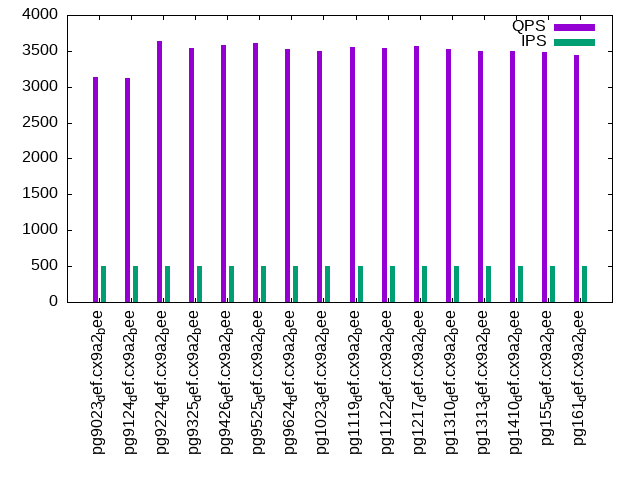

This is a report for the insert benchmark with 30M docs and 1 client(s). It is generated by scripts (bash, awk, sed) and Tufte might not be impressed. An overview of the insert benchmark is here and a short update is here. Below, by DBMS, I mean DBMS+version.config. An example is my8020.c10b40 where my means MySQL, 8020 is version 8.0.20 and c10b40 is the name for the configuration file.
The test server has 8 AMD cores, 16G RAM and an NVMe SSD. It is described here as the Beelink. The benchmark was run with 1 client and there were 1 or 3 connections per client (1 for queries or inserts without rate limits, 1+1 for rate limited inserts+deletes). It uses 1 table. It loads 30M rows per table without secondary indexes, creates 3 secondary indexes per table, then inserts 50m+50m rows per table with a delete per insert to avoid growing the table. It then does 6 read+write tests for 1800s each that do queries as fast as possible with 100,100,500,500,1000,1000 inserts/s and the same for deletes/s per client concurrent with the queries. The database is cached in memory. Clients and the DBMS share one server. The per-database configs are in the per-database subdirectories here.
The tested DBMS are:
The numbers are inserts/s for l.i0, l.i1 and l.i2, indexed docs (or rows) /s for l.x and queries/s for qr100, qp100 thru qr1000, qp1000" The values are the average rate over the entire test for inserts (IPS) and queries (QPS). The range of values for IPS and QPS is split into 3 parts: bottom 25%, middle 50%, top 25%. Values in the bottom 25% have a red background, values in the top 25% have a green background and values in the middle have no color. A gray background is used for values that can be ignored because the DBMS did not sustain the target insert rate. Red backgrounds are not used when the minimum value is within 80% of the max value.
| dbms | l.i0 | l.x | l.i1 | l.i2 | qr100 | qp100 | qr500 | qp500 | qr1000 | qp1000 |
|---|---|---|---|---|---|---|---|---|---|---|
| pg9023_def.cx9a2_bee | 60000 | 128756 | 6482 | 2082 | 7635 | 3161 | 6720 | 3138 | 6871 | 3461 |
| pg9124_def.cx9a2_bee | 61350 | 129311 | 7493 | 1881 | 7834 | 3124 | 6953 | 3123 | 7269 | 3440 |
| pg9224_def.cx9a2_bee | 58824 | 133334 | 7356 | 1741 | 8333 | 3600 | 7427 | 3638 | 7609 | 3617 |
| pg9325_def.cx9a2_bee | 60606 | 132159 | 7432 | 2290 | 8274 | 3530 | 7192 | 3543 | 7129 | 3514 |
| pg9426_def.cx9a2_bee | 65934 | 121952 | 7550 | 2260 | 8417 | 3602 | 7189 | 3580 | 7217 | 3551 |
| pg9525_def.cx9a2_bee | 66964 | 140187 | 10317 | 2010 | 8301 | 3570 | 7314 | 3606 | 7218 | 3648 |
| pg9624_def.cx9a2_bee | 64795 | 196079 | 18157 | 1976 | 8485 | 3517 | 7265 | 3527 | 7380 | 3570 |
| pg1023_def.cx9a2_bee | 63830 | 225565 | 18904 | 3327 | 8465 | 3464 | 7479 | 3496 | 7360 | 3513 |
| pg1119_def.cx9a2_bee | 74074 | 223881 | 11451 | 1778 | 8976 | 3541 | 7590 | 3550 | 7683 | 3540 |
| pg1122_def.cx9a2_bee | 74257 | 215828 | 11471 | 2344 | 9209 | 3529 | 7659 | 3546 | 7736 | 3557 |
| pg1217_def.cx9a2_bee | 72115 | 220589 | 18174 | 2819 | 8705 | 3522 | 8284 | 3571 | 8262 | 3525 |
| pg1310_def.cx9a2_bee | 74627 | 214286 | 18536 | 6281 | 8787 | 3520 | 8182 | 3520 | 8184 | 3523 |
| pg1313_def.cx9a2_bee | 74074 | 212767 | 15943 | 3594 | 8823 | 3513 | 8171 | 3494 | 8111 | 3510 |
| pg1410_def.cx9a2_bee | 72639 | 214286 | 19038 | 5893 | 8462 | 3441 | 8223 | 3493 | 8241 | 3496 |
| pg155_def.cx9a2_bee | 75188 | 223881 | 21894 | 5176 | 8434 | 3474 | 8303 | 3488 | 8236 | 3494 |
| pg161_def.cx9a2_bee | 74813 | 232559 | 21563 | 5882 | 8918 | 3433 | 8195 | 3441 | 8347 | 3461 |
This table has relative throughput, throughput for the DBMS relative to the DBMS in the first line, using the absolute throughput from the previous table. Values less than 0.95 have a yellow background. Values greater than 1.05 have a blue background.
| dbms | l.i0 | l.x | l.i1 | l.i2 | qr100 | qp100 | qr500 | qp500 | qr1000 | qp1000 |
|---|---|---|---|---|---|---|---|---|---|---|
| pg9023_def.cx9a2_bee | 1.00 | 1.00 | 1.00 | 1.00 | 1.00 | 1.00 | 1.00 | 1.00 | 1.00 | 1.00 |
| pg9124_def.cx9a2_bee | 1.02 | 1.00 | 1.16 | 0.90 | 1.03 | 0.99 | 1.03 | 1.00 | 1.06 | 0.99 |
| pg9224_def.cx9a2_bee | 0.98 | 1.04 | 1.13 | 0.84 | 1.09 | 1.14 | 1.11 | 1.16 | 1.11 | 1.05 |
| pg9325_def.cx9a2_bee | 1.01 | 1.03 | 1.15 | 1.10 | 1.08 | 1.12 | 1.07 | 1.13 | 1.04 | 1.02 |
| pg9426_def.cx9a2_bee | 1.10 | 0.95 | 1.16 | 1.09 | 1.10 | 1.14 | 1.07 | 1.14 | 1.05 | 1.03 |
| pg9525_def.cx9a2_bee | 1.12 | 1.09 | 1.59 | 0.97 | 1.09 | 1.13 | 1.09 | 1.15 | 1.05 | 1.05 |
| pg9624_def.cx9a2_bee | 1.08 | 1.52 | 2.80 | 0.95 | 1.11 | 1.11 | 1.08 | 1.12 | 1.07 | 1.03 |
| pg1023_def.cx9a2_bee | 1.06 | 1.75 | 2.92 | 1.60 | 1.11 | 1.10 | 1.11 | 1.11 | 1.07 | 1.02 |
| pg1119_def.cx9a2_bee | 1.23 | 1.74 | 1.77 | 0.85 | 1.18 | 1.12 | 1.13 | 1.13 | 1.12 | 1.02 |
| pg1122_def.cx9a2_bee | 1.24 | 1.68 | 1.77 | 1.13 | 1.21 | 1.12 | 1.14 | 1.13 | 1.13 | 1.03 |
| pg1217_def.cx9a2_bee | 1.20 | 1.71 | 2.80 | 1.35 | 1.14 | 1.11 | 1.23 | 1.14 | 1.20 | 1.02 |
| pg1310_def.cx9a2_bee | 1.24 | 1.66 | 2.86 | 3.02 | 1.15 | 1.11 | 1.22 | 1.12 | 1.19 | 1.02 |
| pg1313_def.cx9a2_bee | 1.23 | 1.65 | 2.46 | 1.73 | 1.16 | 1.11 | 1.22 | 1.11 | 1.18 | 1.01 |
| pg1410_def.cx9a2_bee | 1.21 | 1.66 | 2.94 | 2.83 | 1.11 | 1.09 | 1.22 | 1.11 | 1.20 | 1.01 |
| pg155_def.cx9a2_bee | 1.25 | 1.74 | 3.38 | 2.49 | 1.10 | 1.10 | 1.24 | 1.11 | 1.20 | 1.01 |
| pg161_def.cx9a2_bee | 1.25 | 1.81 | 3.33 | 2.83 | 1.17 | 1.09 | 1.22 | 1.10 | 1.21 | 1.00 |
This lists the average rate of inserts/s for the tests that do inserts concurrent with queries. For such tests the query rate is listed in the table above. The read+write tests are setup so that the insert rate should match the target rate every second. Cells that are not at least 95% of the target have a red background to indicate a failure to satisfy the target.
| dbms | qr100.L1 | qp100.L2 | qr500.L3 | qp500.L4 | qr1000.L5 | qp1000.L6 |
|---|---|---|---|---|---|---|
| pg9023_def.cx9a2_bee | 100 | 100 | 499 | 499 | 998 | 998 |
| pg9124_def.cx9a2_bee | 100 | 100 | 499 | 499 | 998 | 999 |
| pg9224_def.cx9a2_bee | 100 | 100 | 499 | 499 | 997 | 998 |
| pg9325_def.cx9a2_bee | 100 | 100 | 499 | 499 | 997 | 999 |
| pg9426_def.cx9a2_bee | 100 | 100 | 499 | 499 | 998 | 998 |
| pg9525_def.cx9a2_bee | 100 | 100 | 499 | 499 | 998 | 998 |
| pg9624_def.cx9a2_bee | 100 | 100 | 499 | 499 | 998 | 999 |
| pg1023_def.cx9a2_bee | 100 | 100 | 499 | 499 | 998 | 998 |
| pg1119_def.cx9a2_bee | 100 | 100 | 499 | 499 | 998 | 998 |
| pg1122_def.cx9a2_bee | 100 | 100 | 499 | 499 | 998 | 998 |
| pg1217_def.cx9a2_bee | 100 | 100 | 499 | 499 | 998 | 998 |
| pg1310_def.cx9a2_bee | 100 | 100 | 499 | 499 | 998 | 998 |
| pg1313_def.cx9a2_bee | 100 | 100 | 499 | 499 | 999 | 999 |
| pg1410_def.cx9a2_bee | 100 | 100 | 499 | 499 | 997 | 998 |
| pg155_def.cx9a2_bee | 100 | 100 | 499 | 499 | 997 | 998 |
| pg161_def.cx9a2_bee | 100 | 100 | 499 | 499 | 998 | 998 |
| target | 100 | 100 | 500 | 500 | 1000 | 1000 |
l.i0: load without secondary indexes. Graphs for performance per 1-second interval are here.
Average throughput:
Insert response time histogram: each cell has the percentage of responses that take <= the time in the header and max is the max response time in seconds. For the max column values in the top 25% of the range have a red background and in the bottom 25% of the range have a green background. The red background is not used when the min value is within 80% of the max value.
| dbms | 256us | 1ms | 4ms | 16ms | 64ms | 256ms | 1s | 4s | 16s | gt | max |
|---|---|---|---|---|---|---|---|---|---|---|---|
| pg9023_def.cx9a2_bee | 99.047 | 0.718 | 0.235 | 0.047 | |||||||
| pg9124_def.cx9a2_bee | 99.924 | 0.075 | 0.001 | 0.040 | |||||||
| pg9224_def.cx9a2_bee | 99.938 | 0.061 | 0.001 | 0.039 | |||||||
| pg9325_def.cx9a2_bee | 99.893 | 0.106 | 0.001 | 0.048 | |||||||
| pg9426_def.cx9a2_bee | 99.889 | 0.110 | 0.001 | 0.057 | |||||||
| pg9525_def.cx9a2_bee | 100.000 | 0.003 | |||||||||
| pg9624_def.cx9a2_bee | 100.000 | 0.003 | |||||||||
| pg1023_def.cx9a2_bee | 100.000 | 0.003 | |||||||||
| pg1119_def.cx9a2_bee | 100.000 | 0.003 | |||||||||
| pg1122_def.cx9a2_bee | 100.000 | 0.002 | |||||||||
| pg1217_def.cx9a2_bee | 100.000 | 0.003 | |||||||||
| pg1310_def.cx9a2_bee | 100.000 | 0.003 | |||||||||
| pg1313_def.cx9a2_bee | 100.000 | 0.003 | |||||||||
| pg1410_def.cx9a2_bee | 100.000 | 0.003 | |||||||||
| pg155_def.cx9a2_bee | 100.000 | 0.003 | |||||||||
| pg161_def.cx9a2_bee | 100.000 | 0.003 |
Performance metrics for the DBMS listed above. Some are normalized by throughput, others are not. Legend for results is here.
ips qps rps rmbps wps wmbps rpq rkbpq wpi wkbpi csps cpups cspq cpupq dbgb1 dbgb2 rss maxop p50 p99 tag 60000 0 0 0.0 265.5 22.3 0.000 0.000 0.004 0.381 6354 21.2 0.106 28 2.9 3.0 2.3 0.047 60235 56935 pg9023_def.cx9a2_bee 61350 0 0 0.0 272.0 22.9 0.000 0.000 0.004 0.382 6486 22.4 0.106 29 2.9 3.0 1.4 0.040 61504 59591 pg9124_def.cx9a2_bee 58824 0 0 0.0 1391.7 21.8 0.000 0.000 0.024 0.380 9859 22.1 0.168 30 2.9 3.0 2.9 0.039 58955 57058 pg9224_def.cx9a2_bee 60606 0 0 0.0 1121.0 25.5 0.000 0.000 0.018 0.431 9038 22.6 0.149 30 2.9 3.0 2.7 0.048 60861 57832 pg9325_def.cx9a2_bee 65934 0 0 0.0 1130.1 27.8 0.000 0.000 0.017 0.431 9378 22.3 0.142 27 2.9 3.0 0.8 0.057 66424 62599 pg9426_def.cx9a2_bee 66964 0 0 0.0 905.7 28.7 0.000 0.000 0.014 0.438 9533 22.1 0.142 26 2.9 7.8 0.2 0.003 67225 65423 pg9525_def.cx9a2_bee 64795 0 0 0.0 75.2 27.7 0.000 0.000 0.001 0.437 8021 23.3 0.124 29 2.9 7.8 0.2 0.003 64928 63027 pg9624_def.cx9a2_bee 63830 0 0 0.0 74.8 27.3 0.000 0.000 0.001 0.437 7874 22.6 0.123 28 2.9 7.8 1.2 0.003 63930 62405 pg1023_def.cx9a2_bee 74074 0 0 0.0 87.0 31.7 0.000 0.000 0.001 0.438 9131 23.3 0.123 25 2.9 7.8 0.2 0.003 74516 72286 pg1119_def.cx9a2_bee 74257 0 0 0.0 86.9 31.8 0.000 0.000 0.001 0.438 9098 23.1 0.123 25 2.9 7.8 0.2 0.002 74618 72616 pg1122_def.cx9a2_bee 72115 0 0 0.0 84.0 30.9 0.000 0.000 0.001 0.438 8934 23.1 0.124 26 2.9 7.8 1.5 0.003 72422 69821 pg1217_def.cx9a2_bee 74627 0 0 0.0 87.2 32.0 0.000 0.000 0.001 0.439 9188 23.0 0.123 25 2.9 7.8 2.9 0.003 75016 72601 pg1310_def.cx9a2_bee 74074 0 0 0.0 86.8 31.8 0.000 0.000 0.001 0.440 9158 23.6 0.124 25 2.9 7.8 0.2 0.003 74517 71917 pg1313_def.cx9a2_bee 72639 0 0 0.0 84.9 31.2 0.000 0.000 0.001 0.440 9065 22.9 0.125 25 2.9 7.8 2.8 0.003 72943 70920 pg1410_def.cx9a2_bee 75188 0 0 0.0 87.5 32.3 0.000 0.000 0.001 0.440 9246 23.2 0.123 25 2.9 7.8 0.9 0.003 75615 72611 pg155_def.cx9a2_bee 74813 0 0 0.0 87.2 32.0 0.000 0.000 0.001 0.438 9247 23.2 0.124 25 2.9 7.8 2.9 0.003 75140 73084 pg161_def.cx9a2_bee
l.x: create secondary indexes.
Average throughput:
Performance metrics for the DBMS listed above. Some are normalized by throughput, others are not. Legend for results is here.
ips qps rps rmbps wps wmbps rpq rkbpq wpi wkbpi csps cpups cspq cpupq dbgb1 dbgb2 rss maxop p50 p99 tag 128756 0 0 0.0 244.9 42.4 0.000 0.000 0.002 0.337 417 11.7 0.003 7 5.8 5.9 2.7 0.003 NA NA pg9023_def.cx9a2_bee 129311 0 0 0.0 237.9 39.6 0.000 0.000 0.002 0.314 407 12.1 0.003 7 5.8 5.9 2.7 0.003 NA NA pg9124_def.cx9a2_bee 133334 0 0 0.0 253.2 41.1 0.000 0.000 0.002 0.316 380 12.0 0.003 7 5.8 6.0 2.7 0.003 NA NA pg9224_def.cx9a2_bee 132159 0 0 0.0 264.4 47.2 0.000 0.000 0.002 0.366 467 12.2 0.004 7 5.8 5.9 3.0 0.003 NA NA pg9325_def.cx9a2_bee 121952 0 0 0.0 230.4 37.2 0.000 0.000 0.002 0.313 369 12.2 0.003 8 5.8 5.9 3.0 0.003 NA NA pg9426_def.cx9a2_bee 140187 0 0 0.0 100.3 45.7 0.000 0.000 0.001 0.334 438 11.7 0.003 7 5.8 13.3 3.0 0.004 NA NA pg9525_def.cx9a2_bee 196079 0 0 0.0 138.4 63.6 0.000 0.000 0.001 0.332 579 11.8 0.003 5 5.8 13.3 3.0 0.004 NA NA pg9624_def.cx9a2_bee 225565 0 0 0.0 158.7 73.3 0.000 0.000 0.001 0.333 591 11.5 0.003 4 5.8 13.3 3.0 0.003 NA NA pg1023_def.cx9a2_bee 223881 0 0 0.0 157.0 72.4 0.000 0.000 0.001 0.331 642 11.4 0.003 4 5.8 13.3 3.0 0.003 NA NA pg1119_def.cx9a2_bee 215828 0 0 0.0 148.2 69.0 0.000 0.000 0.001 0.327 612 11.6 0.003 4 5.8 13.3 3.0 0.003 NA NA pg1122_def.cx9a2_bee 220589 0 0 0.0 161.6 74.8 0.000 0.000 0.001 0.347 642 11.5 0.003 4 5.8 13.3 3.0 0.003 NA NA pg1217_def.cx9a2_bee 214286 0 0 0.0 147.0 68.1 0.000 0.000 0.001 0.326 608 11.6 0.003 4 5.8 13.3 3.0 0.003 NA NA pg1310_def.cx9a2_bee 212767 0 0 0.0 170.7 78.9 0.000 0.000 0.001 0.380 869 11.7 0.004 4 5.8 13.3 3.0 0.004 NA NA pg1313_def.cx9a2_bee 214286 0 0 0.0 149.8 69.8 0.000 0.000 0.001 0.333 749 11.7 0.003 4 5.8 13.3 3.0 0.003 NA NA pg1410_def.cx9a2_bee 223881 0 0 0.0 176.8 82.2 0.000 0.000 0.001 0.376 561 11.7 0.003 4 5.8 13.3 3.0 0.003 NA NA pg155_def.cx9a2_bee 232559 0 0 0.0 167.4 78.2 0.000 0.000 0.001 0.344 496 11.5 0.002 4 5.8 13.3 3.1 0.004 NA NA pg161_def.cx9a2_bee
l.i1: continue load after secondary indexes created with 50 inserts per transaction. Graphs for performance per 1-second interval are here.
Average throughput:
Insert response time histogram: each cell has the percentage of responses that take <= the time in the header and max is the max response time in seconds. For the max column values in the top 25% of the range have a red background and in the bottom 25% of the range have a green background. The red background is not used when the min value is within 80% of the max value.
| dbms | 256us | 1ms | 4ms | 16ms | 64ms | 256ms | 1s | 4s | 16s | gt | max |
|---|---|---|---|---|---|---|---|---|---|---|---|
| pg9023_def.cx9a2_bee | 97.083 | 2.917 | 0.001 | 0.109 | |||||||
| pg9124_def.cx9a2_bee | 99.508 | 0.491 | nonzero | 0.080 | |||||||
| pg9224_def.cx9a2_bee | 99.917 | 0.083 | nonzero | 0.069 | |||||||
| pg9325_def.cx9a2_bee | 1.737 | 97.920 | 0.294 | 0.049 | nonzero | 0.266 | |||||
| pg9426_def.cx9a2_bee | 0.064 | 99.623 | 0.301 | 0.012 | 0.130 | ||||||
| pg9525_def.cx9a2_bee | 99.994 | 0.005 | 0.001 | nonzero | 0.173 | ||||||
| pg9624_def.cx9a2_bee | 99.992 | 0.007 | 0.001 | 0.060 | |||||||
| pg1023_def.cx9a2_bee | 99.998 | 0.002 | nonzero | 0.021 | |||||||
| pg1119_def.cx9a2_bee | 99.997 | 0.002 | nonzero | nonzero | 0.065 | ||||||
| pg1122_def.cx9a2_bee | 99.996 | 0.004 | nonzero | 0.019 | |||||||
| pg1217_def.cx9a2_bee | 99.997 | 0.003 | nonzero | 0.017 | |||||||
| pg1310_def.cx9a2_bee | 99.996 | 0.004 | nonzero | 0.025 | |||||||
| pg1313_def.cx9a2_bee | 99.997 | 0.003 | nonzero | 0.022 | |||||||
| pg1410_def.cx9a2_bee | 99.618 | 0.375 | 0.007 | 0.029 | |||||||
| pg155_def.cx9a2_bee | 99.996 | 0.003 | nonzero | 0.041 | |||||||
| pg161_def.cx9a2_bee | 99.997 | 0.003 | nonzero | 0.024 |
Delete response time histogram: each cell has the percentage of responses that take <= the time in the header and max is the max response time in seconds. For the max column values in the top 25% of the range have a red background and in the bottom 25% of the range have a green background. The red background is not used when the min value is within 80% of the max value.
| dbms | 256us | 1ms | 4ms | 16ms | 64ms | 256ms | 1s | 4s | 16s | gt | max |
|---|---|---|---|---|---|---|---|---|---|---|---|
| pg9023_def.cx9a2_bee | 0.026 | 70.658 | 2.046 | 26.828 | 0.441 | 0.002 | 0.077 | ||||
| pg9124_def.cx9a2_bee | 0.034 | 73.995 | 0.430 | 25.287 | 0.250 | 0.003 | 0.089 | ||||
| pg9224_def.cx9a2_bee | 0.026 | 74.786 | 0.362 | 24.802 | 0.020 | 0.004 | 0.094 | ||||
| pg9325_def.cx9a2_bee | 0.026 | 79.600 | 0.371 | 18.114 | 1.877 | 0.010 | 0.002 | 0.758 | |||
| pg9426_def.cx9a2_bee | 0.027 | 79.100 | 0.419 | 20.234 | 0.215 | 0.004 | 0.001 | 0.312 | |||
| pg9525_def.cx9a2_bee | 0.323 | 82.492 | 0.493 | 0.772 | 15.917 | 0.003 | nonzero | 0.282 | |||
| pg9624_def.cx9a2_bee | 0.389 | 81.530 | 9.909 | 6.106 | 2.063 | 0.002 | 0.001 | 0.299 | |||
| pg1023_def.cx9a2_bee | 0.243 | 81.139 | 11.273 | 5.256 | 2.086 | 0.003 | 0.001 | 0.334 | |||
| pg1119_def.cx9a2_bee | 0.468 | 82.474 | 0.428 | 6.084 | 10.546 | 0.063 | |||||
| pg1122_def.cx9a2_bee | 0.386 | 82.674 | 0.461 | 5.286 | 11.193 | 0.025 | |||||
| pg1217_def.cx9a2_bee | 0.195 | 82.725 | 0.650 | 16.429 | nonzero | 0.028 | |||||
| pg1310_def.cx9a2_bee | 0.328 | 82.032 | 3.935 | 13.705 | nonzero | 0.022 | |||||
| pg1313_def.cx9a2_bee | 0.308 | 81.659 | 0.672 | 17.361 | nonzero | 0.020 | |||||
| pg1410_def.cx9a2_bee | 0.129 | 81.719 | 3.750 | 14.401 | nonzero | 0.022 | |||||
| pg155_def.cx9a2_bee | 0.137 | 81.706 | 4.934 | 13.223 | 0.001 | 0.040 | |||||
| pg161_def.cx9a2_bee | 0.133 | 80.861 | 5.199 | 13.807 | nonzero | 0.020 |
Performance metrics for the DBMS listed above. Some are normalized by throughput, others are not. Legend for results is here.
ips qps rps rmbps wps wmbps rpq rkbpq wpi wkbpi csps cpups cspq cpupq dbgb1 dbgb2 rss maxop p50 p99 tag 6482 0 0 0.0 13112.4 225.3 0.000 0.000 2.023 35.585 4895 20.4 0.755 252 7.9 8.1 3.3 0.109 6693 4043 pg9023_def.cx9a2_bee 7493 0 0 0.0 15134.8 259.3 0.000 0.000 2.020 35.434 4892 23.8 0.653 254 8.0 8.2 3.3 0.080 8440 3795 pg9124_def.cx9a2_bee 7356 0 0 0.0 14826.3 251.8 0.000 0.000 2.016 35.054 5928 23.9 0.806 260 8.0 8.2 2.4 0.069 8540 3396 pg9224_def.cx9a2_bee 7432 0 4 0.2 14369.6 248.4 0.001 0.024 1.933 34.228 5694 23.1 0.766 249 8.2 8.4 5.4 0.266 8788 2549 pg9325_def.cx9a2_bee 7550 0 2 0.0 14914.8 256.1 0.000 0.003 1.975 34.736 4999 23.6 0.662 250 8.2 8.4 6.6 0.130 8740 3246 pg9426_def.cx9a2_bee 10317 0 29 0.1 435.9 17.9 0.003 0.013 0.042 1.776 5404 18.1 0.524 140 8.4 42.1 6.6 0.173 2649 1847 pg9525_def.cx9a2_bee 18157 0 48 0.2 91.6 27.4 0.003 0.012 0.005 1.545 9141 22.6 0.503 100 8.3 41.1 6.2 0.060 27321 1548 pg9624_def.cx9a2_bee 18904 0 50 0.2 93.6 28.2 0.003 0.012 0.005 1.525 9418 23.7 0.498 100 8.2 40.2 8.2 0.021 27121 1498 pg1023_def.cx9a2_bee 11451 0 32 0.1 59.7 15.8 0.003 0.013 0.005 1.411 5841 18.5 0.510 129 8.3 30.7 6.6 0.065 3148 2047 pg1119_def.cx9a2_bee 11471 0 31 0.1 59.4 15.9 0.003 0.013 0.005 1.416 5854 18.6 0.510 130 8.3 31.2 5.6 0.019 3097 2148 pg1122_def.cx9a2_bee 18174 0 50 0.2 90.8 26.3 0.003 0.013 0.005 1.483 9092 22.9 0.500 101 8.2 38.8 4.2 0.017 27570 4645 pg1217_def.cx9a2_bee 18536 0 52 0.2 92.6 27.0 0.003 0.012 0.005 1.490 9281 22.6 0.501 98 8.0 39.2 8.1 0.025 27830 4046 pg1310_def.cx9a2_bee 15943 0 47 0.2 81.7 22.1 0.003 0.012 0.005 1.419 8047 21.8 0.505 109 8.2 36.3 6.5 0.022 5891 3748 pg1313_def.cx9a2_bee 19038 0 136 1.0 89.2 26.6 0.007 0.054 0.005 1.433 9526 21.4 0.500 90 7.9 39.2 5.3 0.029 27669 4246 pg1410_def.cx9a2_bee 21894 0 57 0.3 96.1 29.1 0.003 0.012 0.004 1.360 10719 22.9 0.490 84 7.9 38.4 0.1 0.041 28419 7042 pg155_def.cx9a2_bee 21563 0 56 0.3 95.3 28.8 0.003 0.012 0.004 1.366 10572 22.8 0.490 85 7.9 38.5 7.5 0.024 28318 6193 pg161_def.cx9a2_bee
l.i2: continue load after secondary indexes created with 5 inserts per transaction. Graphs for performance per 1-second interval are here.
Average throughput:
Insert response time histogram: each cell has the percentage of responses that take <= the time in the header and max is the max response time in seconds. For the max column values in the top 25% of the range have a red background and in the bottom 25% of the range have a green background. The red background is not used when the min value is within 80% of the max value.
| dbms | 256us | 1ms | 4ms | 16ms | 64ms | 256ms | 1s | 4s | 16s | gt | max |
|---|---|---|---|---|---|---|---|---|---|---|---|
| pg9023_def.cx9a2_bee | 83.872 | 14.507 | 1.593 | 0.028 | 0.031 | ||||||
| pg9124_def.cx9a2_bee | 91.698 | 8.126 | 0.127 | 0.049 | 0.036 | ||||||
| pg9224_def.cx9a2_bee | 90.098 | 9.724 | 0.178 | 0.001 | 0.037 | ||||||
| pg9325_def.cx9a2_bee | 94.362 | 5.445 | 0.191 | 0.001 | 0.048 | ||||||
| pg9426_def.cx9a2_bee | 93.890 | 5.914 | 0.194 | 0.002 | nonzero | 0.090 | |||||
| pg9525_def.cx9a2_bee | 25.502 | 74.493 | 0.003 | 0.001 | nonzero | 0.036 | |||||
| pg9624_def.cx9a2_bee | 20.566 | 79.430 | 0.004 | nonzero | nonzero | 0.020 | |||||
| pg1023_def.cx9a2_bee | 12.123 | 87.871 | 0.005 | nonzero | nonzero | 0.045 | |||||
| pg1119_def.cx9a2_bee | 34.966 | 65.031 | 0.003 | nonzero | 0.005 | ||||||
| pg1122_def.cx9a2_bee | 37.575 | 62.422 | 0.002 | nonzero | 0.005 | ||||||
| pg1217_def.cx9a2_bee | 35.332 | 64.665 | 0.003 | nonzero | nonzero | 0.037 | |||||
| pg1310_def.cx9a2_bee | 37.950 | 62.045 | 0.004 | nonzero | 0.006 | ||||||
| pg1313_def.cx9a2_bee | 35.696 | 64.299 | 0.005 | nonzero | nonzero | 0.030 | |||||
| pg1410_def.cx9a2_bee | 19.503 | 80.494 | 0.003 | nonzero | 0.007 | ||||||
| pg155_def.cx9a2_bee | 21.737 | 78.260 | 0.003 | 0.004 | |||||||
| pg161_def.cx9a2_bee | 21.966 | 78.031 | 0.003 | nonzero | 0.004 |
Delete response time histogram: each cell has the percentage of responses that take <= the time in the header and max is the max response time in seconds. For the max column values in the top 25% of the range have a red background and in the bottom 25% of the range have a green background. The red background is not used when the min value is within 80% of the max value.
| dbms | 256us | 1ms | 4ms | 16ms | 64ms | 256ms | 1s | 4s | 16s | gt | max |
|---|---|---|---|---|---|---|---|---|---|---|---|
| pg9023_def.cx9a2_bee | 40.578 | 32.639 | 1.664 | 25.058 | 0.060 | nonzero | 0.070 | ||||
| pg9124_def.cx9a2_bee | 42.693 | 31.732 | 0.026 | 25.527 | 0.021 | nonzero | 0.077 | ||||
| pg9224_def.cx9a2_bee | 38.933 | 35.267 | 0.015 | 25.784 | nonzero | nonzero | 0.078 | ||||
| pg9325_def.cx9a2_bee | 44.611 | 37.338 | 0.025 | 18.026 | 0.001 | nonzero | nonzero | 0.266 | |||
| pg9426_def.cx9a2_bee | 44.148 | 37.205 | 0.029 | 18.616 | 0.001 | nonzero | nonzero | 0.261 | |||
| pg9525_def.cx9a2_bee | 61.309 | 20.415 | 0.003 | 17.276 | 0.997 | nonzero | 0.108 | ||||
| pg9624_def.cx9a2_bee | 63.220 | 15.108 | 0.004 | 21.550 | 0.117 | nonzero | 0.107 | ||||
| pg1023_def.cx9a2_bee | 65.870 | 18.806 | 7.947 | 5.349 | 2.028 | nonzero | nonzero | 0.314 | |||
| pg1119_def.cx9a2_bee | 64.682 | 13.897 | 0.005 | 20.024 | 1.393 | 0.022 | |||||
| pg1122_def.cx9a2_bee | 67.968 | 15.033 | 0.004 | 16.429 | 0.565 | 0.019 | |||||
| pg1217_def.cx9a2_bee | 65.044 | 13.606 | 0.075 | 21.274 | nonzero | 0.037 | |||||
| pg1310_def.cx9a2_bee | 66.217 | 20.814 | 10.194 | 2.774 | 0.001 | 0.026 | |||||
| pg1313_def.cx9a2_bee | 68.551 | 14.125 | 0.007 | 17.317 | nonzero | 0.030 | |||||
| pg1410_def.cx9a2_bee | 55.526 | 25.374 | 17.518 | 1.582 | 0.009 | ||||||
| pg155_def.cx9a2_bee | 54.558 | 23.250 | 18.282 | 3.909 | 0.011 | ||||||
| pg161_def.cx9a2_bee | 57.900 | 24.362 | 14.110 | 3.628 | 0.009 |
Performance metrics for the DBMS listed above. Some are normalized by throughput, others are not. Legend for results is here.
ips qps rps rmbps wps wmbps rpq rkbpq wpi wkbpi csps cpups cspq cpupq dbgb1 dbgb2 rss maxop p50 p99 tag 2082 0 0 0.0 4217.9 70.1 0.000 0.000 2.025 34.465 9474 17.1 4.550 657 8.0 8.2 3.0 0.031 769 440 pg9023_def.cx9a2_bee 1881 0 0 0.0 3797.3 62.0 0.000 0.000 2.019 33.774 8314 17.1 4.420 727 8.1 8.3 2.5 0.036 615 405 pg9124_def.cx9a2_bee 1741 0 0 0.0 3713.6 57.0 0.000 0.000 2.133 33.538 8581 17.0 4.928 781 8.1 8.3 0.8 0.037 550 365 pg9224_def.cx9a2_bee 2290 0 0 0.0 4824.4 73.0 0.000 0.000 2.107 32.647 10999 18.0 4.803 629 8.3 8.5 0.1 0.048 579 400 pg9325_def.cx9a2_bee 2260 0 0 0.0 4779.0 73.4 0.000 0.000 2.115 33.248 10687 18.1 4.729 641 8.3 8.5 3.7 0.090 585 390 pg9426_def.cx9a2_bee 2010 0 0 0.0 261.1 4.7 0.000 0.000 0.130 2.376 8617 14.9 4.286 593 8.4 42.2 5.4 0.036 415 285 pg9525_def.cx9a2_bee 1976 0 0 0.0 28.9 5.3 0.000 0.000 0.015 2.762 9700 15.0 4.910 607 8.3 43.3 6.8 0.020 469 315 pg9624_def.cx9a2_bee 3327 0 0 0.0 39.2 8.4 0.000 0.000 0.012 2.574 16081 17.2 4.834 414 8.3 44.1 4.2 0.045 455 170 pg1023_def.cx9a2_bee 1778 0 0 0.0 27.0 4.6 0.000 0.000 0.015 2.665 8769 14.7 4.932 661 8.4 29.6 5.2 0.005 410 270 pg1119_def.cx9a2_bee 2344 0 0 0.0 28.5 5.1 0.000 0.000 0.012 2.242 11473 15.5 4.896 529 8.4 30.5 6.5 0.005 455 295 pg1122_def.cx9a2_bee 2819 0 0 0.0 29.6 5.7 0.000 0.000 0.011 2.073 13678 16.4 4.852 465 8.2 38.4 4.8 0.037 690 534 pg1217_def.cx9a2_bee 6281 0 0 0.0 36.2 8.3 0.000 0.000 0.006 1.355 30236 21.2 4.814 270 8.1 39.3 7.8 0.006 2632 405 pg1310_def.cx9a2_bee 3594 0 0 0.0 32.9 6.7 0.000 0.000 0.009 1.909 17284 17.5 4.809 389 8.2 36.3 5.7 0.030 799 519 pg1313_def.cx9a2_bee 5893 0 0 0.0 37.9 9.2 0.000 0.000 0.006 1.605 28095 20.3 4.768 276 8.0 41.9 0.1 0.007 1933 969 pg1410_def.cx9a2_bee 5176 0 0 0.0 38.0 9.1 0.000 0.000 0.007 1.800 24692 19.3 4.771 298 8.0 41.8 3.6 0.004 1693 1049 pg155_def.cx9a2_bee 5882 0 0 0.0 41.1 10.2 0.000 0.000 0.007 1.774 27906 20.1 4.744 273 8.0 42.4 8.0 0.004 1833 834 pg161_def.cx9a2_bee
qr100.L1: range queries with 100 insert/s per client. Graphs for performance per 1-second interval are here.
Average throughput:
Query response time histogram: each cell has the percentage of responses that take <= the time in the header and max is the max response time in seconds. For max values in the top 25% of the range have a red background and in the bottom 25% of the range have a green background. The red background is not used when the min value is within 80% of the max value.
| dbms | 256us | 1ms | 4ms | 16ms | 64ms | 256ms | 1s | 4s | 16s | gt | max |
|---|---|---|---|---|---|---|---|---|---|---|---|
| pg9023_def.cx9a2_bee | 99.906 | 0.093 | nonzero | 0.001 | 0.012 | ||||||
| pg9124_def.cx9a2_bee | 99.893 | 0.106 | nonzero | 0.004 | |||||||
| pg9224_def.cx9a2_bee | 99.941 | 0.059 | nonzero | nonzero | 0.004 | ||||||
| pg9325_def.cx9a2_bee | 99.916 | 0.083 | nonzero | 0.004 | |||||||
| pg9426_def.cx9a2_bee | 99.916 | 0.084 | nonzero | nonzero | 0.005 | ||||||
| pg9525_def.cx9a2_bee | 99.920 | 0.079 | nonzero | nonzero | 0.004 | ||||||
| pg9624_def.cx9a2_bee | 99.936 | 0.064 | nonzero | nonzero | 0.005 | ||||||
| pg1023_def.cx9a2_bee | 99.929 | 0.071 | nonzero | nonzero | 0.004 | ||||||
| pg1119_def.cx9a2_bee | 99.938 | 0.062 | nonzero | 0.004 | |||||||
| pg1122_def.cx9a2_bee | 99.967 | 0.033 | nonzero | 0.003 | |||||||
| pg1217_def.cx9a2_bee | 99.937 | 0.062 | nonzero | 0.003 | |||||||
| pg1310_def.cx9a2_bee | 99.952 | 0.048 | nonzero | nonzero | 0.004 | ||||||
| pg1313_def.cx9a2_bee | 99.936 | 0.063 | nonzero | 0.004 | |||||||
| pg1410_def.cx9a2_bee | 99.939 | 0.060 | nonzero | nonzero | 0.006 | ||||||
| pg155_def.cx9a2_bee | 99.936 | 0.063 | 0.001 | nonzero | 0.005 | ||||||
| pg161_def.cx9a2_bee | 99.962 | 0.038 | nonzero | 0.003 |
Insert response time histogram: each cell has the percentage of responses that take <= the time in the header and max is the max response time in seconds. For max values in the top 25% of the range have a red background and in the bottom 25% of the range have a green background. The red background is not used when the min value is within 80% of the max value.
| dbms | 256us | 1ms | 4ms | 16ms | 64ms | 256ms | 1s | 4s | 16s | gt | max |
|---|---|---|---|---|---|---|---|---|---|---|---|
| pg9023_def.cx9a2_bee | 92.750 | 7.250 | 0.024 | ||||||||
| pg9124_def.cx9a2_bee | 99.833 | 0.167 | 0.020 | ||||||||
| pg9224_def.cx9a2_bee | 100.000 | 0.014 | |||||||||
| pg9325_def.cx9a2_bee | 100.000 | 0.011 | |||||||||
| pg9426_def.cx9a2_bee | 100.000 | 0.012 | |||||||||
| pg9525_def.cx9a2_bee | 99.611 | 0.389 | 0.007 | ||||||||
| pg9624_def.cx9a2_bee | 99.667 | 0.333 | 0.007 | ||||||||
| pg1023_def.cx9a2_bee | 99.722 | 0.278 | 0.008 | ||||||||
| pg1119_def.cx9a2_bee | 99.639 | 0.361 | 0.008 | ||||||||
| pg1122_def.cx9a2_bee | 99.694 | 0.306 | 0.008 | ||||||||
| pg1217_def.cx9a2_bee | 99.806 | 0.194 | 0.008 | ||||||||
| pg1310_def.cx9a2_bee | 99.806 | 0.194 | 0.008 | ||||||||
| pg1313_def.cx9a2_bee | 99.694 | 0.306 | 0.009 | ||||||||
| pg1410_def.cx9a2_bee | 99.667 | 0.333 | 0.007 | ||||||||
| pg155_def.cx9a2_bee | 99.639 | 0.361 | 0.008 | ||||||||
| pg161_def.cx9a2_bee | 99.611 | 0.389 | 0.007 |
Delete response time histogram: each cell has the percentage of responses that take <= the time in the header and max is the max response time in seconds. For max values in the top 25% of the range have a red background and in the bottom 25% of the range have a green background. The red background is not used when the min value is within 80% of the max value.
| dbms | 256us | 1ms | 4ms | 16ms | 64ms | 256ms | 1s | 4s | 16s | gt | max |
|---|---|---|---|---|---|---|---|---|---|---|---|
| pg9023_def.cx9a2_bee | 11.750 | 65.722 | 22.444 | 0.083 | 0.020 | ||||||
| pg9124_def.cx9a2_bee | 12.944 | 73.056 | 14.000 | 0.006 | |||||||
| pg9224_def.cx9a2_bee | 10.194 | 64.639 | 25.167 | 0.006 | |||||||
| pg9325_def.cx9a2_bee | 10.667 | 66.667 | 22.667 | 0.006 | |||||||
| pg9426_def.cx9a2_bee | 11.500 | 64.444 | 24.056 | 0.009 | |||||||
| pg9525_def.cx9a2_bee | 10.722 | 67.806 | 21.472 | 0.006 | |||||||
| pg9624_def.cx9a2_bee | 10.806 | 65.167 | 24.028 | 0.006 | |||||||
| pg1023_def.cx9a2_bee | 10.306 | 65.556 | 24.139 | 0.006 | |||||||
| pg1119_def.cx9a2_bee | 9.556 | 61.917 | 28.528 | 0.006 | |||||||
| pg1122_def.cx9a2_bee | 10.500 | 64.389 | 25.111 | 0.006 | |||||||
| pg1217_def.cx9a2_bee | 0.028 | 31.333 | 68.639 | 0.004 | |||||||
| pg1310_def.cx9a2_bee | 31.889 | 68.111 | 0.003 | ||||||||
| pg1313_def.cx9a2_bee | 28.000 | 72.000 | 0.003 | ||||||||
| pg1410_def.cx9a2_bee | 0.028 | 99.972 | 0.010 | ||||||||
| pg155_def.cx9a2_bee | 100.000 | 0.012 | |||||||||
| pg161_def.cx9a2_bee | 27.333 | 72.528 | 0.139 | 0.005 |
Performance metrics for the DBMS listed above. Some are normalized by throughput, others are not. Legend for results is here.
ips qps rps rmbps wps wmbps rpq rkbpq wpi wkbpi csps cpups cspq cpupq dbgb1 dbgb2 rss maxop p50 p99 tag 100 7635 0 0.0 203.9 2.9 0.000 0.000 2.045 30.279 29395 12.7 3.850 133 8.0 8.2 1.5 0.012 7205 6839 pg9023_def.cx9a2_bee 100 7834 0 0.0 198.7 2.9 0.000 0.000 1.993 29.917 30148 12.6 3.849 129 8.1 8.3 1.7 0.004 7449 7190 pg9124_def.cx9a2_bee 100 8333 0 0.0 201.2 2.9 0.000 0.000 2.018 29.886 32017 12.7 3.842 122 8.1 8.2 0.1 0.004 8071 7814 pg9224_def.cx9a2_bee 100 8274 0 0.0 219.0 3.0 0.000 0.000 2.197 30.496 31856 12.8 3.850 124 8.3 8.4 1.0 0.004 7989 7735 pg9325_def.cx9a2_bee 100 8417 0 0.0 218.0 3.0 0.000 0.000 2.187 30.424 32408 12.6 3.850 120 8.3 8.4 0.7 0.005 8084 7799 pg9426_def.cx9a2_bee 100 8301 0 0.0 10.7 0.7 0.000 0.000 0.108 7.411 31850 12.6 3.837 121 8.4 38.6 8.6 0.004 7930 7639 pg9525_def.cx9a2_bee 100 8485 0 0.0 10.3 0.8 0.000 0.000 0.104 7.966 32608 12.6 3.843 119 8.3 43.3 8.5 0.005 8020 7717 pg9624_def.cx9a2_bee 100 8465 0 0.0 9.9 0.8 0.000 0.000 0.099 7.828 32535 13.2 3.843 125 8.3 44.1 0.4 0.004 8071 7785 pg1023_def.cx9a2_bee 100 8976 0 0.0 10.3 0.8 0.000 0.000 0.103 7.886 34495 12.9 3.843 115 8.4 28.4 8.5 0.004 8532 8244 pg1119_def.cx9a2_bee 100 9209 0 0.0 10.3 0.8 0.000 0.000 0.103 7.874 35382 12.5 3.842 109 8.4 28.8 8.6 0.003 8502 8187 pg1122_def.cx9a2_bee 100 8705 0 0.0 10.1 0.8 0.000 0.000 0.101 7.770 33434 13.1 3.841 120 8.2 34.0 1.0 0.003 8456 8277 pg1217_def.cx9a2_bee 100 8787 0 0.0 10.0 0.8 0.000 0.000 0.100 7.830 33731 13.3 3.839 121 8.1 36.5 3.6 0.004 8566 8390 pg1310_def.cx9a2_bee 100 8823 0 0.0 9.6 0.7 0.000 0.000 0.096 7.641 33922 12.9 3.845 117 8.2 33.2 0.4 0.004 8454 8245 pg1313_def.cx9a2_bee 100 8462 0 0.0 8.5 0.8 0.000 0.000 0.086 7.808 32479 12.7 3.838 120 8.0 41.9 1.2 0.006 8145 7929 pg1410_def.cx9a2_bee 100 8434 0 0.0 8.6 0.8 0.000 0.000 0.086 7.934 32387 12.6 3.840 120 8.0 41.8 0.5 0.005 8027 7829 pg155_def.cx9a2_bee 100 8918 0 0.0 8.7 0.7 0.000 0.000 0.087 7.577 34191 12.9 3.834 116 8.0 42.4 0.4 0.003 8652 8469 pg161_def.cx9a2_bee
qp100.L2: point queries with 100 insert/s per client. Graphs for performance per 1-second interval are here.
Average throughput:
Query response time histogram: each cell has the percentage of responses that take <= the time in the header and max is the max response time in seconds. For max values in the top 25% of the range have a red background and in the bottom 25% of the range have a green background. The red background is not used when the min value is within 80% of the max value.
| dbms | 256us | 1ms | 4ms | 16ms | 64ms | 256ms | 1s | 4s | 16s | gt | max |
|---|---|---|---|---|---|---|---|---|---|---|---|
| pg9023_def.cx9a2_bee | 34.899 | 65.100 | 0.001 | nonzero | 0.005 | ||||||
| pg9124_def.cx9a2_bee | 34.648 | 65.351 | 0.001 | nonzero | 0.005 | ||||||
| pg9224_def.cx9a2_bee | 87.446 | 12.554 | 0.001 | nonzero | 0.005 | ||||||
| pg9325_def.cx9a2_bee | 85.207 | 14.793 | nonzero | nonzero | 0.004 | ||||||
| pg9426_def.cx9a2_bee | 85.603 | 14.396 | nonzero | nonzero | 0.005 | ||||||
| pg9525_def.cx9a2_bee | 87.097 | 12.902 | 0.001 | 0.004 | |||||||
| pg9624_def.cx9a2_bee | 87.214 | 12.784 | 0.002 | nonzero | 0.005 | ||||||
| pg1023_def.cx9a2_bee | 86.808 | 13.191 | 0.001 | nonzero | 0.004 | ||||||
| pg1119_def.cx9a2_bee | 87.803 | 12.195 | 0.002 | 0.003 | |||||||
| pg1122_def.cx9a2_bee | 87.701 | 12.298 | 0.001 | 0.003 | |||||||
| pg1217_def.cx9a2_bee | 87.876 | 12.123 | 0.001 | 0.003 | |||||||
| pg1310_def.cx9a2_bee | 87.863 | 12.136 | 0.001 | 0.003 | |||||||
| pg1313_def.cx9a2_bee | 87.900 | 12.099 | 0.001 | 0.004 | |||||||
| pg1410_def.cx9a2_bee | 86.564 | 13.434 | 0.002 | nonzero | 0.011 | ||||||
| pg155_def.cx9a2_bee | 87.068 | 12.930 | 0.002 | nonzero | 0.006 | ||||||
| pg161_def.cx9a2_bee | 85.397 | 14.602 | 0.001 | nonzero | 0.005 |
Insert response time histogram: each cell has the percentage of responses that take <= the time in the header and max is the max response time in seconds. For max values in the top 25% of the range have a red background and in the bottom 25% of the range have a green background. The red background is not used when the min value is within 80% of the max value.
| dbms | 256us | 1ms | 4ms | 16ms | 64ms | 256ms | 1s | 4s | 16s | gt | max |
|---|---|---|---|---|---|---|---|---|---|---|---|
| pg9023_def.cx9a2_bee | 93.167 | 6.833 | 0.025 | ||||||||
| pg9124_def.cx9a2_bee | 100.000 | 0.012 | |||||||||
| pg9224_def.cx9a2_bee | 100.000 | 0.012 | |||||||||
| pg9325_def.cx9a2_bee | 100.000 | 0.013 | |||||||||
| pg9426_def.cx9a2_bee | 100.000 | 0.012 | |||||||||
| pg9525_def.cx9a2_bee | 99.667 | 0.333 | 0.007 | ||||||||
| pg9624_def.cx9a2_bee | 99.722 | 0.278 | 0.007 | ||||||||
| pg1023_def.cx9a2_bee | 99.722 | 0.278 | 0.006 | ||||||||
| pg1119_def.cx9a2_bee | 99.778 | 0.222 | 0.006 | ||||||||
| pg1122_def.cx9a2_bee | 99.806 | 0.194 | 0.008 | ||||||||
| pg1217_def.cx9a2_bee | 99.778 | 0.222 | 0.006 | ||||||||
| pg1310_def.cx9a2_bee | 99.861 | 0.139 | 0.006 | ||||||||
| pg1313_def.cx9a2_bee | 99.778 | 0.222 | 0.008 | ||||||||
| pg1410_def.cx9a2_bee | 99.861 | 0.139 | 0.006 | ||||||||
| pg155_def.cx9a2_bee | 99.833 | 0.167 | 0.006 | ||||||||
| pg161_def.cx9a2_bee | 99.778 | 0.222 | 0.008 |
Delete response time histogram: each cell has the percentage of responses that take <= the time in the header and max is the max response time in seconds. For max values in the top 25% of the range have a red background and in the bottom 25% of the range have a green background. The red background is not used when the min value is within 80% of the max value.
| dbms | 256us | 1ms | 4ms | 16ms | 64ms | 256ms | 1s | 4s | 16s | gt | max |
|---|---|---|---|---|---|---|---|---|---|---|---|
| pg9023_def.cx9a2_bee | 1.694 | 34.694 | 1.222 | 61.306 | 1.083 | 0.024 | |||||
| pg9124_def.cx9a2_bee | 1.333 | 33.528 | 1.389 | 63.750 | 0.008 | ||||||
| pg9224_def.cx9a2_bee | 0.889 | 55.889 | 0.056 | 43.167 | 0.008 | ||||||
| pg9325_def.cx9a2_bee | 0.694 | 35.306 | 0.083 | 63.917 | 0.009 | ||||||
| pg9426_def.cx9a2_bee | 0.278 | 18.583 | 0.167 | 80.972 | 0.012 | ||||||
| pg9525_def.cx9a2_bee | 0.861 | 35.139 | 0.472 | 63.528 | 0.012 | ||||||
| pg9624_def.cx9a2_bee | 0.250 | 22.667 | 0.111 | 76.972 | 0.011 | ||||||
| pg1023_def.cx9a2_bee | 0.583 | 48.722 | 0.611 | 50.083 | 0.008 | ||||||
| pg1119_def.cx9a2_bee | 0.417 | 13.611 | 0.028 | 85.944 | 0.011 | ||||||
| pg1122_def.cx9a2_bee | 0.556 | 36.833 | 0.306 | 62.306 | 0.009 | ||||||
| pg1217_def.cx9a2_bee | 0.333 | 29.056 | 70.556 | 0.056 | 0.005 | ||||||
| pg1310_def.cx9a2_bee | 0.194 | 30.889 | 68.806 | 0.111 | 0.005 | ||||||
| pg1313_def.cx9a2_bee | 0.250 | 49.222 | 50.472 | 0.056 | 0.005 | ||||||
| pg1410_def.cx9a2_bee | 0.472 | 44.111 | 0.028 | 55.389 | 0.010 | ||||||
| pg155_def.cx9a2_bee | 0.417 | 25.444 | 74.139 | 0.013 | |||||||
| pg161_def.cx9a2_bee | 0.667 | 47.833 | 51.306 | 0.194 | 0.006 |
Performance metrics for the DBMS listed above. Some are normalized by throughput, others are not. Legend for results is here.
ips qps rps rmbps wps wmbps rpq rkbpq wpi wkbpi csps cpups cspq cpupq dbgb1 dbgb2 rss maxop p50 p99 tag 100 3161 0 0.0 209.6 3.3 0.000 0.000 2.100 33.360 13232 14.7 4.186 372 8.0 8.2 3.1 0.005 3164 2941 pg9023_def.cx9a2_bee 100 3124 0 0.0 214.8 3.3 0.000 0.000 2.154 33.827 13090 13.7 4.190 351 8.1 8.3 2.8 0.005 3118 2925 pg9124_def.cx9a2_bee 100 3600 0 0.0 216.7 3.3 0.000 0.000 2.171 33.758 14968 13.6 4.158 302 8.1 8.2 2.9 0.005 3583 3467 pg9224_def.cx9a2_bee 100 3530 0 0.0 350.8 3.9 0.000 0.000 3.518 40.257 15165 13.4 4.296 304 8.3 8.4 0.6 0.004 3532 3405 pg9325_def.cx9a2_bee 100 3602 0 0.0 353.1 4.0 0.000 0.000 3.542 40.620 15448 13.5 4.289 300 8.3 8.4 1.0 0.005 3598 3468 pg9426_def.cx9a2_bee 100 3570 0 0.0 108.4 1.7 0.000 0.000 1.086 17.265 14862 13.7 4.163 307 8.4 36.0 8.6 0.004 3564 3436 pg9525_def.cx9a2_bee 100 3517 0 0.0 56.8 1.7 0.000 0.000 0.570 16.953 14660 14.3 4.169 325 8.3 40.2 8.5 0.005 3500 3388 pg9624_def.cx9a2_bee 100 3464 0 0.0 57.1 1.7 0.000 0.000 0.572 16.977 14443 14.2 4.170 328 8.3 43.0 3.8 0.004 3452 3327 pg1023_def.cx9a2_bee 100 3541 0 0.0 57.8 1.7 0.000 0.000 0.580 16.973 14764 14.4 4.170 325 8.4 28.4 8.5 0.003 3532 3420 pg1119_def.cx9a2_bee 100 3529 0 0.0 58.1 1.7 0.000 0.000 0.582 16.964 14701 14.3 4.166 324 8.4 28.4 8.6 0.003 3516 3420 pg1122_def.cx9a2_bee 100 3522 0 0.0 57.9 1.7 0.000 0.000 0.581 16.960 14667 14.2 4.165 323 8.2 32.9 0.9 0.003 3503 3404 pg1217_def.cx9a2_bee 100 3520 0 0.0 57.1 1.7 0.000 0.000 0.572 16.955 14669 14.3 4.167 325 8.1 35.4 1.0 0.003 3503 3404 pg1310_def.cx9a2_bee 100 3513 0 0.0 58.1 1.7 0.000 0.000 0.582 17.007 14646 14.1 4.169 321 8.2 32.1 1.0 0.004 3500 3388 pg1313_def.cx9a2_bee 100 3441 0 0.0 56.5 1.7 0.000 0.000 0.567 17.135 14389 13.8 4.182 321 8.0 40.7 0.9 0.011 3436 3340 pg1410_def.cx9a2_bee 100 3474 0 0.0 56.7 1.7 0.000 0.000 0.568 17.238 14326 13.6 4.123 313 8.0 41.8 3.7 0.006 3468 3372 pg155_def.cx9a2_bee 100 3433 0 0.0 56.3 1.6 0.000 0.000 0.564 16.850 14198 13.2 4.136 308 8.0 42.4 1.0 0.005 3406 3305 pg161_def.cx9a2_bee
qr500.L3: range queries with 500 insert/s per client. Graphs for performance per 1-second interval are here.
Average throughput:
Query response time histogram: each cell has the percentage of responses that take <= the time in the header and max is the max response time in seconds. For max values in the top 25% of the range have a red background and in the bottom 25% of the range have a green background. The red background is not used when the min value is within 80% of the max value.
| dbms | 256us | 1ms | 4ms | 16ms | 64ms | 256ms | 1s | 4s | 16s | gt | max |
|---|---|---|---|---|---|---|---|---|---|---|---|
| pg9023_def.cx9a2_bee | 98.463 | 1.535 | nonzero | 0.001 | nonzero | 0.018 | |||||
| pg9124_def.cx9a2_bee | 98.621 | 1.379 | nonzero | nonzero | nonzero | 0.021 | |||||
| pg9224_def.cx9a2_bee | 99.079 | 0.921 | nonzero | nonzero | 0.015 | ||||||
| pg9325_def.cx9a2_bee | 98.761 | 1.239 | nonzero | 0.002 | |||||||
| pg9426_def.cx9a2_bee | 98.655 | 1.345 | nonzero | nonzero | 0.004 | ||||||
| pg9525_def.cx9a2_bee | 98.888 | 1.112 | nonzero | 0.003 | |||||||
| pg9624_def.cx9a2_bee | 99.050 | 0.950 | nonzero | 0.003 | |||||||
| pg1023_def.cx9a2_bee | 99.222 | 0.778 | nonzero | 0.003 | |||||||
| pg1119_def.cx9a2_bee | 99.271 | 0.728 | nonzero | 0.003 | |||||||
| pg1122_def.cx9a2_bee | 99.392 | 0.608 | nonzero | nonzero | 0.004 | ||||||
| pg1217_def.cx9a2_bee | 99.886 | 0.114 | nonzero | 0.003 | |||||||
| pg1310_def.cx9a2_bee | 99.886 | 0.114 | nonzero | 0.004 | |||||||
| pg1313_def.cx9a2_bee | 99.882 | 0.118 | nonzero | 0.003 | |||||||
| pg1410_def.cx9a2_bee | 99.897 | 0.103 | nonzero | nonzero | 0.017 | ||||||
| pg155_def.cx9a2_bee | 99.898 | 0.102 | nonzero | 0.004 | |||||||
| pg161_def.cx9a2_bee | 99.921 | 0.078 | nonzero | 0.003 |
Insert response time histogram: each cell has the percentage of responses that take <= the time in the header and max is the max response time in seconds. For max values in the top 25% of the range have a red background and in the bottom 25% of the range have a green background. The red background is not used when the min value is within 80% of the max value.
| dbms | 256us | 1ms | 4ms | 16ms | 64ms | 256ms | 1s | 4s | 16s | gt | max |
|---|---|---|---|---|---|---|---|---|---|---|---|
| pg9023_def.cx9a2_bee | 92.033 | 7.967 | 0.049 | ||||||||
| pg9124_def.cx9a2_bee | 99.794 | 0.206 | 0.036 | ||||||||
| pg9224_def.cx9a2_bee | 99.933 | 0.067 | 0.027 | ||||||||
| pg9325_def.cx9a2_bee | 99.994 | 0.006 | 0.023 | ||||||||
| pg9426_def.cx9a2_bee | 99.989 | 0.011 | 0.020 | ||||||||
| pg9525_def.cx9a2_bee | 99.944 | 0.056 | 0.007 | ||||||||
| pg9624_def.cx9a2_bee | 99.961 | 0.039 | 0.008 | ||||||||
| pg1023_def.cx9a2_bee | 99.939 | 0.061 | 0.008 | ||||||||
| pg1119_def.cx9a2_bee | 99.939 | 0.061 | 0.011 | ||||||||
| pg1122_def.cx9a2_bee | 99.972 | 0.028 | 0.008 | ||||||||
| pg1217_def.cx9a2_bee | 99.967 | 0.033 | 0.007 | ||||||||
| pg1310_def.cx9a2_bee | 99.956 | 0.044 | 0.008 | ||||||||
| pg1313_def.cx9a2_bee | 99.978 | 0.022 | 0.007 | ||||||||
| pg1410_def.cx9a2_bee | 99.956 | 0.039 | 0.006 | 0.020 | |||||||
| pg155_def.cx9a2_bee | 99.961 | 0.039 | 0.006 | ||||||||
| pg161_def.cx9a2_bee | 99.983 | 0.017 | 0.008 |
Delete response time histogram: each cell has the percentage of responses that take <= the time in the header and max is the max response time in seconds. For max values in the top 25% of the range have a red background and in the bottom 25% of the range have a green background. The red background is not used when the min value is within 80% of the max value.
| dbms | 256us | 1ms | 4ms | 16ms | 64ms | 256ms | 1s | 4s | 16s | gt | max |
|---|---|---|---|---|---|---|---|---|---|---|---|
| pg9023_def.cx9a2_bee | 2.317 | 87.072 | 10.006 | 0.578 | 0.028 | 0.019 | |||||
| pg9124_def.cx9a2_bee | 2.228 | 86.761 | 11.006 | 0.006 | 0.022 | ||||||
| pg9224_def.cx9a2_bee | 4.056 | 84.150 | 11.706 | 0.067 | 0.022 | 0.018 | |||||
| pg9325_def.cx9a2_bee | 4.961 | 95.022 | 0.011 | 0.006 | 0.004 | ||||||
| pg9426_def.cx9a2_bee | 6.728 | 93.239 | 0.028 | 0.006 | 0.005 | ||||||
| pg9525_def.cx9a2_bee | 10.722 | 89.233 | 0.044 | 0.003 | |||||||
| pg9624_def.cx9a2_bee | 18.500 | 81.361 | 0.139 | 0.003 | |||||||
| pg1023_def.cx9a2_bee | 17.567 | 82.311 | 0.122 | 0.003 | |||||||
| pg1119_def.cx9a2_bee | 18.383 | 81.533 | 0.083 | 0.003 | |||||||
| pg1122_def.cx9a2_bee | 18.350 | 81.583 | 0.067 | 0.003 | |||||||
| pg1217_def.cx9a2_bee | 14.806 | 85.089 | 0.106 | 0.003 | |||||||
| pg1310_def.cx9a2_bee | 15.961 | 83.944 | 0.094 | 0.003 | |||||||
| pg1313_def.cx9a2_bee | 14.544 | 85.356 | 0.100 | 0.003 | |||||||
| pg1410_def.cx9a2_bee | 7.228 | 92.639 | 0.128 | 0.006 | 0.017 | ||||||
| pg155_def.cx9a2_bee | 8.356 | 91.511 | 0.133 | 0.003 | |||||||
| pg161_def.cx9a2_bee | 7.322 | 92.522 | 0.156 | 0.003 |
Performance metrics for the DBMS listed above. Some are normalized by throughput, others are not. Legend for results is here.
ips qps rps rmbps wps wmbps rpq rkbpq wpi wkbpi csps cpups cspq cpupq dbgb1 dbgb2 rss maxop p50 p99 tag 499 6720 0 0.0 1029.4 17.7 0.000 0.000 2.064 36.374 26064 13.6 3.878 162 8.0 8.2 3.0 0.018 6554 5642 pg9023_def.cx9a2_bee 499 6953 0 0.0 1025.6 17.7 0.000 0.000 2.056 36.241 26940 13.7 3.875 158 8.1 8.3 3.9 0.021 6778 5881 pg9124_def.cx9a2_bee 499 7427 0 0.0 1041.3 17.7 0.000 0.000 2.089 36.258 28807 13.8 3.879 149 8.1 8.3 2.4 0.015 7304 6166 pg9224_def.cx9a2_bee 499 7192 0 0.0 1105.1 15.1 0.000 0.000 2.216 30.939 28174 13.5 3.917 150 8.3 8.4 2.6 0.002 7082 6201 pg9325_def.cx9a2_bee 499 7189 0 0.0 1104.6 15.1 0.000 0.000 2.215 30.931 28117 13.5 3.911 150 8.3 8.4 3.0 0.004 7048 6153 pg9426_def.cx9a2_bee 499 7314 0 0.0 111.4 2.3 0.000 0.000 0.223 4.780 28284 13.0 3.867 142 8.4 34.9 8.6 0.003 7162 6148 pg9525_def.cx9a2_bee 499 7265 0 0.0 60.5 2.4 0.000 0.000 0.121 4.853 28158 13.1 3.876 144 8.3 39.1 8.5 0.003 7113 6121 pg9624_def.cx9a2_bee 499 7479 0 0.0 60.8 2.3 0.000 0.000 0.122 4.794 28981 13.1 3.875 140 8.3 41.9 0.7 0.003 7306 6153 pg1023_def.cx9a2_bee 499 7590 0 0.0 61.5 2.4 0.000 0.000 0.123 4.838 29370 13.1 3.870 138 8.4 28.4 8.5 0.003 7495 6377 pg1119_def.cx9a2_bee 499 7659 0 0.0 61.3 2.4 0.000 0.000 0.123 4.849 29637 13.2 3.869 138 8.4 28.5 8.6 0.004 7576 6430 pg1122_def.cx9a2_bee 499 8284 0 0.0 61.5 2.3 0.000 0.000 0.123 4.803 32013 13.1 3.864 127 8.2 31.8 1.7 0.003 7978 7350 pg1217_def.cx9a2_bee 499 8182 0 0.0 60.7 2.3 0.000 0.000 0.121 4.801 31616 13.3 3.864 130 8.1 34.3 2.5 0.004 7915 7354 pg1310_def.cx9a2_bee 499 8171 0 0.0 61.8 2.3 0.000 0.000 0.124 4.768 31612 12.8 3.869 125 8.2 31.0 1.7 0.003 7895 7241 pg1313_def.cx9a2_bee 499 8223 0 0.0 59.9 2.3 0.000 0.000 0.120 4.749 31737 12.8 3.860 125 8.0 39.5 1.7 0.017 7850 7064 pg1410_def.cx9a2_bee 499 8303 0 0.0 59.9 2.3 0.000 0.000 0.120 4.771 32030 12.8 3.858 123 8.0 40.6 6.6 0.004 8359 7032 pg155_def.cx9a2_bee 499 8195 0 0.0 59.9 2.2 0.000 0.000 0.120 4.596 31606 12.7 3.857 124 8.0 41.2 4.0 0.003 8003 7416 pg161_def.cx9a2_bee
qp500.L4: point queries with 500 insert/s per client. Graphs for performance per 1-second interval are here.
Average throughput:
Query response time histogram: each cell has the percentage of responses that take <= the time in the header and max is the max response time in seconds. For max values in the top 25% of the range have a red background and in the bottom 25% of the range have a green background. The red background is not used when the min value is within 80% of the max value.
| dbms | 256us | 1ms | 4ms | 16ms | 64ms | 256ms | 1s | 4s | 16s | gt | max |
|---|---|---|---|---|---|---|---|---|---|---|---|
| pg9023_def.cx9a2_bee | 34.107 | 65.889 | 0.004 | nonzero | 0.005 | ||||||
| pg9124_def.cx9a2_bee | 34.075 | 65.921 | 0.003 | nonzero | 0.006 | ||||||
| pg9224_def.cx9a2_bee | 87.778 | 12.219 | 0.003 | nonzero | 0.006 | ||||||
| pg9325_def.cx9a2_bee | 80.298 | 19.700 | 0.002 | nonzero | 0.005 | ||||||
| pg9426_def.cx9a2_bee | 80.377 | 19.622 | 0.001 | nonzero | nonzero | 0.039 | |||||
| pg9525_def.cx9a2_bee | 87.481 | 12.516 | 0.003 | nonzero | 0.005 | ||||||
| pg9624_def.cx9a2_bee | 87.596 | 12.403 | 0.002 | nonzero | 0.006 | ||||||
| pg1023_def.cx9a2_bee | 87.352 | 12.646 | 0.002 | nonzero | 0.005 | ||||||
| pg1119_def.cx9a2_bee | 88.076 | 11.923 | 0.002 | nonzero | 0.004 | ||||||
| pg1122_def.cx9a2_bee | 87.923 | 12.076 | 0.002 | nonzero | 0.004 | ||||||
| pg1217_def.cx9a2_bee | 88.704 | 11.295 | 0.001 | 0.003 | |||||||
| pg1310_def.cx9a2_bee | 87.961 | 12.037 | 0.002 | 0.003 | |||||||
| pg1313_def.cx9a2_bee | 87.582 | 12.416 | 0.001 | 0.003 | |||||||
| pg1410_def.cx9a2_bee | 87.464 | 12.535 | 0.002 | nonzero | 0.004 | ||||||
| pg155_def.cx9a2_bee | 87.499 | 12.499 | 0.002 | nonzero | 0.004 | ||||||
| pg161_def.cx9a2_bee | 85.654 | 14.345 | 0.001 | 0.003 |
Insert response time histogram: each cell has the percentage of responses that take <= the time in the header and max is the max response time in seconds. For max values in the top 25% of the range have a red background and in the bottom 25% of the range have a green background. The red background is not used when the min value is within 80% of the max value.
| dbms | 256us | 1ms | 4ms | 16ms | 64ms | 256ms | 1s | 4s | 16s | gt | max |
|---|---|---|---|---|---|---|---|---|---|---|---|
| pg9023_def.cx9a2_bee | 92.350 | 7.650 | 0.031 | ||||||||
| pg9124_def.cx9a2_bee | 99.972 | 0.028 | 0.020 | ||||||||
| pg9224_def.cx9a2_bee | 100.000 | 0.014 | |||||||||
| pg9325_def.cx9a2_bee | 0.022 | 99.978 | 0.015 | ||||||||
| pg9426_def.cx9a2_bee | 0.006 | 99.983 | 0.011 | 0.019 | |||||||
| pg9525_def.cx9a2_bee | 99.933 | 0.067 | 0.009 | ||||||||
| pg9624_def.cx9a2_bee | 99.944 | 0.056 | 0.006 | ||||||||
| pg1023_def.cx9a2_bee | 99.950 | 0.050 | 0.007 | ||||||||
| pg1119_def.cx9a2_bee | 99.978 | 0.022 | 0.008 | ||||||||
| pg1122_def.cx9a2_bee | 99.956 | 0.044 | 0.006 | ||||||||
| pg1217_def.cx9a2_bee | 99.956 | 0.044 | 0.007 | ||||||||
| pg1310_def.cx9a2_bee | 99.933 | 0.067 | 0.011 | ||||||||
| pg1313_def.cx9a2_bee | 99.978 | 0.022 | 0.006 | ||||||||
| pg1410_def.cx9a2_bee | 99.956 | 0.044 | 0.008 | ||||||||
| pg155_def.cx9a2_bee | 99.978 | 0.022 | 0.008 | ||||||||
| pg161_def.cx9a2_bee | 99.956 | 0.033 | 0.011 | 0.017 |
Delete response time histogram: each cell has the percentage of responses that take <= the time in the header and max is the max response time in seconds. For max values in the top 25% of the range have a red background and in the bottom 25% of the range have a green background. The red background is not used when the min value is within 80% of the max value.
| dbms | 256us | 1ms | 4ms | 16ms | 64ms | 256ms | 1s | 4s | 16s | gt | max |
|---|---|---|---|---|---|---|---|---|---|---|---|
| pg9023_def.cx9a2_bee | 15.511 | 63.156 | 4.456 | 16.511 | 0.367 | 0.024 | |||||
| pg9124_def.cx9a2_bee | 16.094 | 63.928 | 4.306 | 15.672 | 0.010 | ||||||
| pg9224_def.cx9a2_bee | 13.439 | 63.956 | 1.244 | 21.361 | 0.011 | ||||||
| pg9325_def.cx9a2_bee | 13.378 | 51.622 | 13.561 | 21.433 | 0.006 | 0.017 | |||||
| pg9426_def.cx9a2_bee | 18.050 | 53.500 | 12.972 | 15.478 | 0.015 | ||||||
| pg9525_def.cx9a2_bee | 21.333 | 43.350 | 13.400 | 21.917 | 0.011 | ||||||
| pg9624_def.cx9a2_bee | 21.628 | 48.033 | 13.456 | 16.883 | 0.009 | ||||||
| pg1023_def.cx9a2_bee | 23.606 | 46.611 | 12.733 | 17.050 | 0.009 | ||||||
| pg1119_def.cx9a2_bee | 24.350 | 45.833 | 12.311 | 17.506 | 0.009 | ||||||
| pg1122_def.cx9a2_bee | 22.878 | 46.417 | 12.211 | 18.494 | 0.010 | ||||||
| pg1217_def.cx9a2_bee | 18.594 | 56.289 | 25.106 | 0.011 | 0.005 | ||||||
| pg1310_def.cx9a2_bee | 19.544 | 52.728 | 27.717 | 0.011 | 0.005 | ||||||
| pg1313_def.cx9a2_bee | 18.056 | 53.711 | 27.539 | 0.694 | 0.005 | ||||||
| pg1410_def.cx9a2_bee | 17.611 | 47.767 | 0.256 | 34.367 | 0.010 | ||||||
| pg155_def.cx9a2_bee | 18.772 | 47.600 | 0.094 | 33.533 | 0.013 | ||||||
| pg161_def.cx9a2_bee | 14.894 | 59.111 | 25.806 | 0.189 | 0.015 |
Performance metrics for the DBMS listed above. Some are normalized by throughput, others are not. Legend for results is here.
ips qps rps rmbps wps wmbps rpq rkbpq wpi wkbpi csps cpups cspq cpupq dbgb1 dbgb2 rss maxop p50 p99 tag 499 3138 0 0.0 1143.6 16.3 0.000 0.000 2.291 33.347 13302 15.8 4.239 403 8.1 8.2 2.8 0.005 3134 2877 pg9023_def.cx9a2_bee 499 3123 0 0.0 1147.3 16.2 0.000 0.000 2.299 33.251 13231 14.7 4.236 377 8.1 8.3 3.0 0.006 3117 2893 pg9124_def.cx9a2_bee 499 3638 0 0.0 1162.6 16.3 0.000 0.000 2.329 33.521 15341 14.8 4.216 325 8.1 8.3 1.0 0.006 3628 3483 pg9224_def.cx9a2_bee 499 3543 0 0.0 1742.0 23.2 0.000 0.000 3.492 47.553 16443 14.9 4.641 336 8.3 8.4 6.1 0.005 3548 3324 pg9325_def.cx9a2_bee 499 3580 0 0.0 1737.6 23.1 0.000 0.000 3.479 47.437 16544 14.8 4.621 331 8.3 8.5 6.8 0.039 3582 3327 pg9426_def.cx9a2_bee 499 3606 0 0.0 155.9 3.1 0.000 0.000 0.312 6.431 15176 14.2 4.208 315 8.4 33.8 6.7 0.005 3596 3452 pg9525_def.cx9a2_bee 499 3527 0 0.0 24.6 3.1 0.000 0.000 0.049 6.321 14838 14.6 4.207 331 8.4 37.9 6.8 0.006 3516 3404 pg9624_def.cx9a2_bee 499 3496 0 0.0 24.8 3.1 0.000 0.000 0.050 6.324 14737 14.7 4.215 336 8.3 40.8 6.8 0.005 3484 3356 pg1023_def.cx9a2_bee 499 3550 0 0.0 25.2 3.1 0.000 0.000 0.050 6.349 14932 14.7 4.206 331 8.4 28.4 7.1 0.004 3532 3420 pg1119_def.cx9a2_bee 499 3546 0 0.0 25.0 3.1 0.000 0.000 0.050 6.354 14904 14.7 4.203 332 8.4 28.5 1.9 0.004 3532 3420 pg1122_def.cx9a2_bee 499 3571 0 0.0 24.7 3.1 0.000 0.000 0.049 6.342 15002 14.6 4.201 327 8.2 29.7 6.5 0.003 3550 3449 pg1217_def.cx9a2_bee 499 3520 0 0.0 24.4 3.1 0.000 0.000 0.049 6.313 14814 14.6 4.208 332 8.1 32.1 2.5 0.003 3501 3403 pg1310_def.cx9a2_bee 499 3494 0 0.0 24.8 3.1 0.000 0.000 0.050 6.361 14711 14.6 4.210 334 8.2 28.8 6.6 0.003 3484 3370 pg1313_def.cx9a2_bee 499 3493 0 0.0 21.7 3.0 0.000 0.000 0.044 6.172 14733 14.2 4.218 325 8.0 37.3 1.7 0.004 3486 3356 pg1410_def.cx9a2_bee 499 3488 0 0.0 26.4 3.0 0.000 0.000 0.053 6.162 14522 14.0 4.163 321 8.0 38.3 1.7 0.004 3484 3368 pg155_def.cx9a2_bee 499 3441 0 0.0 31.2 3.0 0.000 0.000 0.062 6.101 14369 13.5 4.176 314 8.0 39.1 3.9 0.003 3420 3307 pg161_def.cx9a2_bee
qr1000.L5: range queries with 1000 insert/s per client. Graphs for performance per 1-second interval are here.
Average throughput:
Query response time histogram: each cell has the percentage of responses that take <= the time in the header and max is the max response time in seconds. For max values in the top 25% of the range have a red background and in the bottom 25% of the range have a green background. The red background is not used when the min value is within 80% of the max value.
| dbms | 256us | 1ms | 4ms | 16ms | 64ms | 256ms | 1s | 4s | 16s | gt | max |
|---|---|---|---|---|---|---|---|---|---|---|---|
| pg9023_def.cx9a2_bee | 98.678 | 1.309 | 0.007 | 0.006 | nonzero | 0.022 | |||||
| pg9124_def.cx9a2_bee | 99.096 | 0.900 | 0.004 | nonzero | 0.013 | ||||||
| pg9224_def.cx9a2_bee | 99.213 | 0.784 | 0.004 | nonzero | 0.010 | ||||||
| pg9325_def.cx9a2_bee | 98.380 | 1.616 | 0.004 | nonzero | 0.011 | ||||||
| pg9426_def.cx9a2_bee | 98.589 | 1.406 | 0.004 | nonzero | 0.006 | ||||||
| pg9525_def.cx9a2_bee | 98.633 | 1.363 | 0.004 | nonzero | 0.005 | ||||||
| pg9624_def.cx9a2_bee | 98.998 | 0.997 | 0.004 | nonzero | 0.006 | ||||||
| pg1023_def.cx9a2_bee | 98.910 | 1.086 | 0.004 | nonzero | 0.004 | ||||||
| pg1119_def.cx9a2_bee | 99.125 | 0.872 | 0.004 | nonzero | nonzero | 0.026 | |||||
| pg1122_def.cx9a2_bee | 99.257 | 0.739 | 0.004 | nonzero | 0.032 | ||||||
| pg1217_def.cx9a2_bee | 99.854 | 0.142 | 0.004 | nonzero | 0.007 | ||||||
| pg1310_def.cx9a2_bee | 99.850 | 0.147 | 0.004 | nonzero | 0.006 | ||||||
| pg1313_def.cx9a2_bee | 99.848 | 0.148 | 0.004 | nonzero | 0.007 | ||||||
| pg1410_def.cx9a2_bee | 99.883 | 0.113 | 0.003 | nonzero | 0.008 | ||||||
| pg155_def.cx9a2_bee | 99.891 | 0.106 | 0.003 | nonzero | nonzero | 0.017 | |||||
| pg161_def.cx9a2_bee | 99.903 | 0.094 | 0.003 | nonzero | 0.009 |
Insert response time histogram: each cell has the percentage of responses that take <= the time in the header and max is the max response time in seconds. For max values in the top 25% of the range have a red background and in the bottom 25% of the range have a green background. The red background is not used when the min value is within 80% of the max value.
| dbms | 256us | 1ms | 4ms | 16ms | 64ms | 256ms | 1s | 4s | 16s | gt | max |
|---|---|---|---|---|---|---|---|---|---|---|---|
| pg9023_def.cx9a2_bee | 94.686 | 5.314 | 0.037 | ||||||||
| pg9124_def.cx9a2_bee | 99.800 | 0.200 | 0.036 | ||||||||
| pg9224_def.cx9a2_bee | 99.992 | 0.008 | 0.022 | ||||||||
| pg9325_def.cx9a2_bee | 0.014 | 99.986 | 0.014 | ||||||||
| pg9426_def.cx9a2_bee | 0.003 | 99.997 | 0.016 | ||||||||
| pg9525_def.cx9a2_bee | 99.975 | 0.025 | 0.009 | ||||||||
| pg9624_def.cx9a2_bee | 99.969 | 0.031 | 0.008 | ||||||||
| pg1023_def.cx9a2_bee | 99.972 | 0.028 | 0.009 | ||||||||
| pg1119_def.cx9a2_bee | 99.986 | 0.011 | 0.003 | 0.030 | |||||||
| pg1122_def.cx9a2_bee | 99.983 | 0.017 | 0.007 | ||||||||
| pg1217_def.cx9a2_bee | 99.969 | 0.031 | 0.008 | ||||||||
| pg1310_def.cx9a2_bee | 99.981 | 0.019 | 0.006 | ||||||||
| pg1313_def.cx9a2_bee | 99.975 | 0.025 | 0.008 | ||||||||
| pg1410_def.cx9a2_bee | 99.953 | 0.047 | 0.009 | ||||||||
| pg155_def.cx9a2_bee | 99.964 | 0.025 | 0.011 | 0.030 | |||||||
| pg161_def.cx9a2_bee | 99.986 | 0.011 | 0.003 | 0.023 |
Delete response time histogram: each cell has the percentage of responses that take <= the time in the header and max is the max response time in seconds. For max values in the top 25% of the range have a red background and in the bottom 25% of the range have a green background. The red background is not used when the min value is within 80% of the max value.
| dbms | 256us | 1ms | 4ms | 16ms | 64ms | 256ms | 1s | 4s | 16s | gt | max |
|---|---|---|---|---|---|---|---|---|---|---|---|
| pg9023_def.cx9a2_bee | 0.997 | 62.017 | 11.944 | 24.428 | 0.614 | 0.028 | |||||
| pg9124_def.cx9a2_bee | 0.997 | 62.592 | 14.150 | 22.261 | 0.015 | ||||||
| pg9224_def.cx9a2_bee | 1.756 | 67.536 | 11.603 | 19.106 | 0.013 | ||||||
| pg9325_def.cx9a2_bee | 1.733 | 78.247 | 6.167 | 13.853 | 0.013 | ||||||
| pg9426_def.cx9a2_bee | 2.483 | 80.536 | 6.286 | 10.694 | 0.013 | ||||||
| pg9525_def.cx9a2_bee | 4.772 | 79.858 | 6.914 | 8.456 | 0.009 | ||||||
| pg9624_def.cx9a2_bee | 6.039 | 76.814 | 6.928 | 10.219 | 0.009 | ||||||
| pg1023_def.cx9a2_bee | 6.094 | 75.675 | 6.064 | 12.167 | 0.011 | ||||||
| pg1119_def.cx9a2_bee | 6.492 | 78.403 | 6.269 | 8.833 | 0.003 | 0.027 | |||||
| pg1122_def.cx9a2_bee | 6.286 | 75.361 | 7.072 | 11.281 | 0.011 | ||||||
| pg1217_def.cx9a2_bee | 4.453 | 79.839 | 15.689 | 0.019 | 0.006 | ||||||
| pg1310_def.cx9a2_bee | 5.242 | 79.781 | 14.953 | 0.025 | 0.005 | ||||||
| pg1313_def.cx9a2_bee | 4.583 | 80.672 | 14.350 | 0.394 | 0.005 | ||||||
| pg1410_def.cx9a2_bee | 2.944 | 81.667 | 0.617 | 14.772 | 0.008 | ||||||
| pg155_def.cx9a2_bee | 2.700 | 80.728 | 0.094 | 16.475 | 0.003 | 0.028 | |||||
| pg161_def.cx9a2_bee | 2.783 | 81.211 | 14.839 | 1.164 | 0.003 | 0.020 |
Performance metrics for the DBMS listed above. Some are normalized by throughput, others are not. Legend for results is here.
ips qps rps rmbps wps wmbps rpq rkbpq wpi wkbpi csps cpups cspq cpupq dbgb1 dbgb2 rss maxop p50 p99 tag 998 6871 0 0.0 2054.0 35.4 0.000 0.000 2.058 36.271 26933 15.3 3.920 178 8.1 8.2 1.4 0.022 6728 5626 pg9023_def.cx9a2_bee 998 7269 0 0.0 2061.4 35.3 0.000 0.000 2.066 36.230 28423 15.4 3.910 169 8.1 8.3 2.0 0.013 7145 5885 pg9124_def.cx9a2_bee 997 7609 0 0.0 2097.3 35.3 0.000 0.000 2.103 36.209 29908 15.5 3.931 163 8.1 8.3 3.6 0.010 7522 6150 pg9224_def.cx9a2_bee 997 7129 0 0.0 2221.1 33.1 0.000 0.000 2.227 34.008 28586 15.3 4.010 172 8.3 8.5 6.4 0.011 6950 5880 pg9325_def.cx9a2_bee 998 7217 0 0.0 2217.8 33.1 0.000 0.000 2.223 33.977 28789 15.2 3.989 169 8.3 8.5 6.8 0.006 7061 5998 pg9426_def.cx9a2_bee 998 7218 0 0.0 178.3 3.6 0.000 0.000 0.179 3.708 28187 13.8 3.905 153 8.4 31.7 5.7 0.005 7118 5976 pg9525_def.cx9a2_bee 998 7380 0 0.0 26.3 3.6 0.000 0.000 0.026 3.689 28853 14.0 3.910 152 8.4 35.8 8.5 0.006 7223 5948 pg9624_def.cx9a2_bee 998 7360 0 0.0 26.5 3.6 0.000 0.000 0.027 3.659 28788 14.2 3.911 154 8.3 38.6 6.8 0.004 7226 5988 pg1023_def.cx9a2_bee 998 7683 0 0.0 27.0 3.6 0.000 0.000 0.027 3.696 29998 13.9 3.904 145 8.4 28.4 8.5 0.026 7560 6150 pg1119_def.cx9a2_bee 998 7736 0 0.0 27.1 3.6 0.000 0.000 0.027 3.707 30226 14.0 3.907 145 8.4 28.5 7.1 0.032 7655 6199 pg1122_def.cx9a2_bee 998 8262 0 0.0 26.7 3.6 0.000 0.000 0.027 3.676 32204 14.1 3.898 137 8.2 28.3 6.5 0.007 8029 7070 pg1217_def.cx9a2_bee 998 8184 0 0.0 26.3 3.6 0.000 0.000 0.026 3.658 31935 14.4 3.902 141 8.2 29.8 6.5 0.006 8007 7130 pg1310_def.cx9a2_bee 999 8111 0 0.0 26.7 3.6 0.000 0.000 0.027 3.668 31612 14.2 3.898 140 8.2 28.3 0.9 0.007 7940 6956 pg1313_def.cx9a2_bee 997 8241 0 0.0 40.2 3.3 0.000 0.000 0.040 3.388 32092 13.8 3.894 134 8.0 35.2 2.5 0.008 8039 6972 pg1410_def.cx9a2_bee 997 8236 0 0.0 41.6 4.0 0.000 0.000 0.042 4.136 32047 13.9 3.891 135 8.0 36.2 6.7 0.017 8173 6988 pg155_def.cx9a2_bee 998 8347 0 0.0 38.3 3.4 0.000 0.000 0.038 3.497 32433 13.7 3.885 131 8.1 36.8 4.0 0.009 8136 7096 pg161_def.cx9a2_bee
qp1000.L6: point queries with 1000 insert/s per client. Graphs for performance per 1-second interval are here.
Average throughput:
Query response time histogram: each cell has the percentage of responses that take <= the time in the header and max is the max response time in seconds. For max values in the top 25% of the range have a red background and in the bottom 25% of the range have a green background. The red background is not used when the min value is within 80% of the max value.
| dbms | 256us | 1ms | 4ms | 16ms | 64ms | 256ms | 1s | 4s | 16s | gt | max |
|---|---|---|---|---|---|---|---|---|---|---|---|
| pg9023_def.cx9a2_bee | 69.628 | 30.364 | 0.007 | nonzero | 0.005 | ||||||
| pg9124_def.cx9a2_bee | 70.724 | 29.270 | 0.006 | nonzero | 0.005 | ||||||
| pg9224_def.cx9a2_bee | 87.533 | 12.462 | 0.005 | nonzero | 0.007 | ||||||
| pg9325_def.cx9a2_bee | 76.361 | 23.637 | 0.002 | nonzero | 0.005 | ||||||
| pg9426_def.cx9a2_bee | 76.664 | 23.333 | 0.003 | nonzero | 0.005 | ||||||
| pg9525_def.cx9a2_bee | 88.132 | 11.863 | 0.004 | nonzero | 0.004 | ||||||
| pg9624_def.cx9a2_bee | 88.036 | 11.962 | 0.002 | nonzero | 0.005 | ||||||
| pg1023_def.cx9a2_bee | 87.574 | 12.423 | 0.003 | 0.004 | |||||||
| pg1119_def.cx9a2_bee | 87.912 | 12.085 | 0.003 | 0.003 | |||||||
| pg1122_def.cx9a2_bee | 88.219 | 11.779 | 0.002 | 0.003 | |||||||
| pg1217_def.cx9a2_bee | 87.928 | 12.069 | 0.003 | 0.003 | |||||||
| pg1310_def.cx9a2_bee | 87.844 | 12.154 | 0.002 | 0.003 | |||||||
| pg1313_def.cx9a2_bee | 87.912 | 12.085 | 0.002 | 0.004 | |||||||
| pg1410_def.cx9a2_bee | 87.611 | 12.387 | 0.002 | nonzero | nonzero | 0.018 | |||||
| pg155_def.cx9a2_bee | 87.631 | 12.367 | 0.002 | 0.003 | |||||||
| pg161_def.cx9a2_bee | 86.162 | 13.836 | 0.002 | 0.003 |
Insert response time histogram: each cell has the percentage of responses that take <= the time in the header and max is the max response time in seconds. For max values in the top 25% of the range have a red background and in the bottom 25% of the range have a green background. The red background is not used when the min value is within 80% of the max value.
| dbms | 256us | 1ms | 4ms | 16ms | 64ms | 256ms | 1s | 4s | 16s | gt | max |
|---|---|---|---|---|---|---|---|---|---|---|---|
| pg9023_def.cx9a2_bee | 94.947 | 5.053 | 0.034 | ||||||||
| pg9124_def.cx9a2_bee | 99.900 | 0.100 | 0.038 | ||||||||
| pg9224_def.cx9a2_bee | 99.986 | 0.014 | 0.025 | ||||||||
| pg9325_def.cx9a2_bee | 0.019 | 99.961 | 0.019 | 0.019 | |||||||
| pg9426_def.cx9a2_bee | 0.033 | 99.956 | 0.011 | 0.026 | |||||||
| pg9525_def.cx9a2_bee | 99.967 | 0.033 | 0.011 | ||||||||
| pg9624_def.cx9a2_bee | 99.972 | 0.025 | 0.003 | 0.017 | |||||||
| pg1023_def.cx9a2_bee | 99.986 | 0.014 | 0.008 | ||||||||
| pg1119_def.cx9a2_bee | 99.983 | 0.017 | 0.006 | ||||||||
| pg1122_def.cx9a2_bee | 99.981 | 0.019 | 0.008 | ||||||||
| pg1217_def.cx9a2_bee | 99.986 | 0.014 | 0.007 | ||||||||
| pg1310_def.cx9a2_bee | 99.981 | 0.019 | 0.008 | ||||||||
| pg1313_def.cx9a2_bee | 99.975 | 0.022 | 0.003 | 0.021 | |||||||
| pg1410_def.cx9a2_bee | 99.942 | 0.047 | 0.011 | 0.023 | |||||||
| pg155_def.cx9a2_bee | 99.994 | 0.006 | 0.006 | ||||||||
| pg161_def.cx9a2_bee | 99.981 | 0.019 | 0.007 |
Delete response time histogram: each cell has the percentage of responses that take <= the time in the header and max is the max response time in seconds. For max values in the top 25% of the range have a red background and in the bottom 25% of the range have a green background. The red background is not used when the min value is within 80% of the max value.
| dbms | 256us | 1ms | 4ms | 16ms | 64ms | 256ms | 1s | 4s | 16s | gt | max |
|---|---|---|---|---|---|---|---|---|---|---|---|
| pg9023_def.cx9a2_bee | 7.306 | 73.297 | 6.742 | 12.294 | 0.361 | 0.025 | |||||
| pg9124_def.cx9a2_bee | 7.086 | 73.836 | 9.889 | 9.172 | 0.017 | 0.025 | |||||
| pg9224_def.cx9a2_bee | 6.356 | 75.400 | 10.139 | 8.100 | 0.006 | 0.017 | |||||
| pg9325_def.cx9a2_bee | 8.306 | 74.469 | 6.908 | 10.314 | 0.003 | 0.033 | |||||
| pg9426_def.cx9a2_bee | 10.097 | 73.369 | 6.761 | 9.769 | 0.003 | 0.030 | |||||
| pg9525_def.cx9a2_bee | 14.800 | 68.711 | 7.375 | 9.114 | 0.009 | ||||||
| pg9624_def.cx9a2_bee | 13.997 | 71.086 | 7.142 | 7.775 | 0.015 | ||||||
| pg1023_def.cx9a2_bee | 14.225 | 69.889 | 6.753 | 9.133 | 0.010 | ||||||
| pg1119_def.cx9a2_bee | 14.708 | 70.719 | 6.514 | 8.058 | 0.010 | ||||||
| pg1122_def.cx9a2_bee | 14.333 | 68.636 | 7.042 | 9.989 | 0.011 | ||||||
| pg1217_def.cx9a2_bee | 10.889 | 74.631 | 14.461 | 0.019 | 0.007 | ||||||
| pg1310_def.cx9a2_bee | 12.347 | 74.194 | 13.439 | 0.019 | 0.005 | ||||||
| pg1313_def.cx9a2_bee | 10.958 | 71.650 | 14.819 | 2.569 | 0.003 | 0.019 | |||||
| pg1410_def.cx9a2_bee | 10.428 | 71.128 | 1.853 | 16.583 | 0.008 | 0.020 | |||||
| pg155_def.cx9a2_bee | 10.522 | 71.750 | 0.189 | 17.539 | 0.010 | ||||||
| pg161_def.cx9a2_bee | 9.808 | 74.661 | 14.033 | 1.497 | 0.005 |
Performance metrics for the DBMS listed above. Some are normalized by throughput, others are not. Legend for results is here.
ips qps rps rmbps wps wmbps rpq rkbpq wpi wkbpi csps cpups cspq cpupq dbgb1 dbgb2 rss maxop p50 p99 tag 998 3461 0 0.0 2324.3 34.9 0.000 0.000 2.328 35.760 14910 17.2 4.308 398 8.1 8.3 2.9 0.005 3534 2957 pg9023_def.cx9a2_bee 999 3440 0 0.0 2315.5 37.3 0.000 0.000 2.318 38.211 14796 16.3 4.301 379 8.1 8.3 3.3 0.005 3502 2925 pg9124_def.cx9a2_bee 998 3617 0 0.0 2356.3 37.4 0.000 0.000 2.362 38.393 15692 16.3 4.339 361 8.1 8.3 3.1 0.007 3597 3420 pg9224_def.cx9a2_bee 999 3514 0 0.0 3033.7 40.8 0.000 0.000 3.037 41.868 16812 16.0 4.784 364 8.3 8.5 8.1 0.005 3500 3292 pg9325_def.cx9a2_bee 998 3551 0 0.0 3038.5 40.9 0.000 0.000 3.046 41.949 16928 15.9 4.767 358 8.3 8.5 3.9 0.005 3548 3292 pg9426_def.cx9a2_bee 998 3648 0 0.0 175.7 3.7 0.000 0.000 0.176 3.763 15601 14.9 4.276 327 8.4 29.3 5.4 0.004 3628 3499 pg9525_def.cx9a2_bee 999 3570 0 0.0 21.1 3.6 0.000 0.000 0.021 3.740 15232 15.4 4.267 345 8.4 33.4 6.8 0.005 3548 3420 pg9624_def.cx9a2_bee 998 3513 0 0.0 21.2 3.6 0.000 0.000 0.021 3.739 15018 15.4 4.275 351 8.3 36.3 6.8 0.004 3500 3372 pg1023_def.cx9a2_bee 998 3540 0 0.0 21.5 3.7 0.000 0.000 0.022 3.762 15120 15.1 4.271 341 8.4 28.4 6.7 0.003 3518 3406 pg1119_def.cx9a2_bee 998 3557 0 0.0 21.5 3.7 0.000 0.000 0.022 3.769 15186 15.1 4.269 340 8.4 28.5 6.7 0.003 3534 3420 pg1122_def.cx9a2_bee 998 3525 0 0.0 21.1 3.7 0.000 0.000 0.021 3.744 15059 15.1 4.272 343 8.2 28.3 6.5 0.003 3502 3404 pg1217_def.cx9a2_bee 998 3523 0 0.0 20.9 3.6 0.000 0.000 0.021 3.721 15071 15.0 4.278 341 8.2 28.2 6.7 0.003 3503 3404 pg1310_def.cx9a2_bee 999 3510 0 0.0 21.2 3.7 0.000 0.000 0.021 3.749 14995 15.1 4.273 344 8.3 28.3 5.0 0.004 3499 3374 pg1313_def.cx9a2_bee 998 3496 0 0.0 27.5 3.6 0.000 0.000 0.028 3.688 14970 14.7 4.282 336 8.1 32.4 2.5 0.018 3484 3374 pg1410_def.cx9a2_bee 998 3494 0 0.0 25.3 2.9 0.000 0.000 0.025 2.976 14759 14.4 4.224 330 8.1 33.4 4.4 0.003 3484 3372 pg155_def.cx9a2_bee 998 3461 0 0.0 26.7 3.5 0.000 0.000 0.027 3.587 14684 13.9 4.243 321 8.1 34.0 6.6 0.003 3438 3324 pg161_def.cx9a2_bee
l.i0: load without secondary indexes
Performance metrics for all DBMS, not just the ones listed above. Some are normalized by throughput, others are not. Legend for results is here.
ips qps rps rmbps wps wmbps rpq rkbpq wpi wkbpi csps cpups cspq cpupq dbgb1 dbgb2 rss maxop p50 p99 tag 60000 0 0 0.0 265.5 22.3 0.000 0.000 0.004 0.381 6354 21.2 0.106 28 2.9 3.0 2.3 0.047 60235 56935 pg9023_def.cx9a2_bee 61350 0 0 0.0 272.0 22.9 0.000 0.000 0.004 0.382 6486 22.4 0.106 29 2.9 3.0 1.4 0.040 61504 59591 pg9124_def.cx9a2_bee 58824 0 0 0.0 1391.7 21.8 0.000 0.000 0.024 0.380 9859 22.1 0.168 30 2.9 3.0 2.9 0.039 58955 57058 pg9224_def.cx9a2_bee 60606 0 0 0.0 1121.0 25.5 0.000 0.000 0.018 0.431 9038 22.6 0.149 30 2.9 3.0 2.7 0.048 60861 57832 pg9325_def.cx9a2_bee 65934 0 0 0.0 1130.1 27.8 0.000 0.000 0.017 0.431 9378 22.3 0.142 27 2.9 3.0 0.8 0.057 66424 62599 pg9426_def.cx9a2_bee 66964 0 0 0.0 905.7 28.7 0.000 0.000 0.014 0.438 9533 22.1 0.142 26 2.9 7.8 0.2 0.003 67225 65423 pg9525_def.cx9a2_bee 64795 0 0 0.0 75.2 27.7 0.000 0.000 0.001 0.437 8021 23.3 0.124 29 2.9 7.8 0.2 0.003 64928 63027 pg9624_def.cx9a2_bee 63830 0 0 0.0 74.8 27.3 0.000 0.000 0.001 0.437 7874 22.6 0.123 28 2.9 7.8 1.2 0.003 63930 62405 pg1023_def.cx9a2_bee 74074 0 0 0.0 87.0 31.7 0.000 0.000 0.001 0.438 9131 23.3 0.123 25 2.9 7.8 0.2 0.003 74516 72286 pg1119_def.cx9a2_bee 74257 0 0 0.0 86.9 31.8 0.000 0.000 0.001 0.438 9098 23.1 0.123 25 2.9 7.8 0.2 0.002 74618 72616 pg1122_def.cx9a2_bee 72115 0 0 0.0 84.0 30.9 0.000 0.000 0.001 0.438 8934 23.1 0.124 26 2.9 7.8 1.5 0.003 72422 69821 pg1217_def.cx9a2_bee 74627 0 0 0.0 87.2 32.0 0.000 0.000 0.001 0.439 9188 23.0 0.123 25 2.9 7.8 2.9 0.003 75016 72601 pg1310_def.cx9a2_bee 74074 0 0 0.0 86.8 31.8 0.000 0.000 0.001 0.440 9158 23.6 0.124 25 2.9 7.8 0.2 0.003 74517 71917 pg1313_def.cx9a2_bee 72639 0 0 0.0 84.9 31.2 0.000 0.000 0.001 0.440 9065 22.9 0.125 25 2.9 7.8 2.8 0.003 72943 70920 pg1410_def.cx9a2_bee 75188 0 0 0.0 87.5 32.3 0.000 0.000 0.001 0.440 9246 23.2 0.123 25 2.9 7.8 0.9 0.003 75615 72611 pg155_def.cx9a2_bee 74813 0 0 0.0 87.2 32.0 0.000 0.000 0.001 0.438 9247 23.2 0.124 25 2.9 7.8 2.9 0.003 75140 73084 pg161_def.cx9a2_bee
l.x: create secondary indexes
Performance metrics for all DBMS, not just the ones listed above. Some are normalized by throughput, others are not. Legend for results is here.
ips qps rps rmbps wps wmbps rpq rkbpq wpi wkbpi csps cpups cspq cpupq dbgb1 dbgb2 rss maxop p50 p99 tag 128756 0 0 0.0 244.9 42.4 0.000 0.000 0.002 0.337 417 11.7 0.003 7 5.8 5.9 2.7 0.003 NA NA pg9023_def.cx9a2_bee 129311 0 0 0.0 237.9 39.6 0.000 0.000 0.002 0.314 407 12.1 0.003 7 5.8 5.9 2.7 0.003 NA NA pg9124_def.cx9a2_bee 133334 0 0 0.0 253.2 41.1 0.000 0.000 0.002 0.316 380 12.0 0.003 7 5.8 6.0 2.7 0.003 NA NA pg9224_def.cx9a2_bee 132159 0 0 0.0 264.4 47.2 0.000 0.000 0.002 0.366 467 12.2 0.004 7 5.8 5.9 3.0 0.003 NA NA pg9325_def.cx9a2_bee 121952 0 0 0.0 230.4 37.2 0.000 0.000 0.002 0.313 369 12.2 0.003 8 5.8 5.9 3.0 0.003 NA NA pg9426_def.cx9a2_bee 140187 0 0 0.0 100.3 45.7 0.000 0.000 0.001 0.334 438 11.7 0.003 7 5.8 13.3 3.0 0.004 NA NA pg9525_def.cx9a2_bee 196079 0 0 0.0 138.4 63.6 0.000 0.000 0.001 0.332 579 11.8 0.003 5 5.8 13.3 3.0 0.004 NA NA pg9624_def.cx9a2_bee 225565 0 0 0.0 158.7 73.3 0.000 0.000 0.001 0.333 591 11.5 0.003 4 5.8 13.3 3.0 0.003 NA NA pg1023_def.cx9a2_bee 223881 0 0 0.0 157.0 72.4 0.000 0.000 0.001 0.331 642 11.4 0.003 4 5.8 13.3 3.0 0.003 NA NA pg1119_def.cx9a2_bee 215828 0 0 0.0 148.2 69.0 0.000 0.000 0.001 0.327 612 11.6 0.003 4 5.8 13.3 3.0 0.003 NA NA pg1122_def.cx9a2_bee 220589 0 0 0.0 161.6 74.8 0.000 0.000 0.001 0.347 642 11.5 0.003 4 5.8 13.3 3.0 0.003 NA NA pg1217_def.cx9a2_bee 214286 0 0 0.0 147.0 68.1 0.000 0.000 0.001 0.326 608 11.6 0.003 4 5.8 13.3 3.0 0.003 NA NA pg1310_def.cx9a2_bee 212767 0 0 0.0 170.7 78.9 0.000 0.000 0.001 0.380 869 11.7 0.004 4 5.8 13.3 3.0 0.004 NA NA pg1313_def.cx9a2_bee 214286 0 0 0.0 149.8 69.8 0.000 0.000 0.001 0.333 749 11.7 0.003 4 5.8 13.3 3.0 0.003 NA NA pg1410_def.cx9a2_bee 223881 0 0 0.0 176.8 82.2 0.000 0.000 0.001 0.376 561 11.7 0.003 4 5.8 13.3 3.0 0.003 NA NA pg155_def.cx9a2_bee 232559 0 0 0.0 167.4 78.2 0.000 0.000 0.001 0.344 496 11.5 0.002 4 5.8 13.3 3.1 0.004 NA NA pg161_def.cx9a2_bee
l.i1: continue load after secondary indexes created with 50 inserts per transaction
Performance metrics for all DBMS, not just the ones listed above. Some are normalized by throughput, others are not. Legend for results is here.
ips qps rps rmbps wps wmbps rpq rkbpq wpi wkbpi csps cpups cspq cpupq dbgb1 dbgb2 rss maxop p50 p99 tag 6482 0 0 0.0 13112.4 225.3 0.000 0.000 2.023 35.585 4895 20.4 0.755 252 7.9 8.1 3.3 0.109 6693 4043 pg9023_def.cx9a2_bee 7493 0 0 0.0 15134.8 259.3 0.000 0.000 2.020 35.434 4892 23.8 0.653 254 8.0 8.2 3.3 0.080 8440 3795 pg9124_def.cx9a2_bee 7356 0 0 0.0 14826.3 251.8 0.000 0.000 2.016 35.054 5928 23.9 0.806 260 8.0 8.2 2.4 0.069 8540 3396 pg9224_def.cx9a2_bee 7432 0 4 0.2 14369.6 248.4 0.001 0.024 1.933 34.228 5694 23.1 0.766 249 8.2 8.4 5.4 0.266 8788 2549 pg9325_def.cx9a2_bee 7550 0 2 0.0 14914.8 256.1 0.000 0.003 1.975 34.736 4999 23.6 0.662 250 8.2 8.4 6.6 0.130 8740 3246 pg9426_def.cx9a2_bee 10317 0 29 0.1 435.9 17.9 0.003 0.013 0.042 1.776 5404 18.1 0.524 140 8.4 42.1 6.6 0.173 2649 1847 pg9525_def.cx9a2_bee 18157 0 48 0.2 91.6 27.4 0.003 0.012 0.005 1.545 9141 22.6 0.503 100 8.3 41.1 6.2 0.060 27321 1548 pg9624_def.cx9a2_bee 18904 0 50 0.2 93.6 28.2 0.003 0.012 0.005 1.525 9418 23.7 0.498 100 8.2 40.2 8.2 0.021 27121 1498 pg1023_def.cx9a2_bee 11451 0 32 0.1 59.7 15.8 0.003 0.013 0.005 1.411 5841 18.5 0.510 129 8.3 30.7 6.6 0.065 3148 2047 pg1119_def.cx9a2_bee 11471 0 31 0.1 59.4 15.9 0.003 0.013 0.005 1.416 5854 18.6 0.510 130 8.3 31.2 5.6 0.019 3097 2148 pg1122_def.cx9a2_bee 18174 0 50 0.2 90.8 26.3 0.003 0.013 0.005 1.483 9092 22.9 0.500 101 8.2 38.8 4.2 0.017 27570 4645 pg1217_def.cx9a2_bee 18536 0 52 0.2 92.6 27.0 0.003 0.012 0.005 1.490 9281 22.6 0.501 98 8.0 39.2 8.1 0.025 27830 4046 pg1310_def.cx9a2_bee 15943 0 47 0.2 81.7 22.1 0.003 0.012 0.005 1.419 8047 21.8 0.505 109 8.2 36.3 6.5 0.022 5891 3748 pg1313_def.cx9a2_bee 19038 0 136 1.0 89.2 26.6 0.007 0.054 0.005 1.433 9526 21.4 0.500 90 7.9 39.2 5.3 0.029 27669 4246 pg1410_def.cx9a2_bee 21894 0 57 0.3 96.1 29.1 0.003 0.012 0.004 1.360 10719 22.9 0.490 84 7.9 38.4 0.1 0.041 28419 7042 pg155_def.cx9a2_bee 21563 0 56 0.3 95.3 28.8 0.003 0.012 0.004 1.366 10572 22.8 0.490 85 7.9 38.5 7.5 0.024 28318 6193 pg161_def.cx9a2_bee
l.i2: continue load after secondary indexes created with 5 inserts per transaction
Performance metrics for all DBMS, not just the ones listed above. Some are normalized by throughput, others are not. Legend for results is here.
ips qps rps rmbps wps wmbps rpq rkbpq wpi wkbpi csps cpups cspq cpupq dbgb1 dbgb2 rss maxop p50 p99 tag 2082 0 0 0.0 4217.9 70.1 0.000 0.000 2.025 34.465 9474 17.1 4.550 657 8.0 8.2 3.0 0.031 769 440 pg9023_def.cx9a2_bee 1881 0 0 0.0 3797.3 62.0 0.000 0.000 2.019 33.774 8314 17.1 4.420 727 8.1 8.3 2.5 0.036 615 405 pg9124_def.cx9a2_bee 1741 0 0 0.0 3713.6 57.0 0.000 0.000 2.133 33.538 8581 17.0 4.928 781 8.1 8.3 0.8 0.037 550 365 pg9224_def.cx9a2_bee 2290 0 0 0.0 4824.4 73.0 0.000 0.000 2.107 32.647 10999 18.0 4.803 629 8.3 8.5 0.1 0.048 579 400 pg9325_def.cx9a2_bee 2260 0 0 0.0 4779.0 73.4 0.000 0.000 2.115 33.248 10687 18.1 4.729 641 8.3 8.5 3.7 0.090 585 390 pg9426_def.cx9a2_bee 2010 0 0 0.0 261.1 4.7 0.000 0.000 0.130 2.376 8617 14.9 4.286 593 8.4 42.2 5.4 0.036 415 285 pg9525_def.cx9a2_bee 1976 0 0 0.0 28.9 5.3 0.000 0.000 0.015 2.762 9700 15.0 4.910 607 8.3 43.3 6.8 0.020 469 315 pg9624_def.cx9a2_bee 3327 0 0 0.0 39.2 8.4 0.000 0.000 0.012 2.574 16081 17.2 4.834 414 8.3 44.1 4.2 0.045 455 170 pg1023_def.cx9a2_bee 1778 0 0 0.0 27.0 4.6 0.000 0.000 0.015 2.665 8769 14.7 4.932 661 8.4 29.6 5.2 0.005 410 270 pg1119_def.cx9a2_bee 2344 0 0 0.0 28.5 5.1 0.000 0.000 0.012 2.242 11473 15.5 4.896 529 8.4 30.5 6.5 0.005 455 295 pg1122_def.cx9a2_bee 2819 0 0 0.0 29.6 5.7 0.000 0.000 0.011 2.073 13678 16.4 4.852 465 8.2 38.4 4.8 0.037 690 534 pg1217_def.cx9a2_bee 6281 0 0 0.0 36.2 8.3 0.000 0.000 0.006 1.355 30236 21.2 4.814 270 8.1 39.3 7.8 0.006 2632 405 pg1310_def.cx9a2_bee 3594 0 0 0.0 32.9 6.7 0.000 0.000 0.009 1.909 17284 17.5 4.809 389 8.2 36.3 5.7 0.030 799 519 pg1313_def.cx9a2_bee 5893 0 0 0.0 37.9 9.2 0.000 0.000 0.006 1.605 28095 20.3 4.768 276 8.0 41.9 0.1 0.007 1933 969 pg1410_def.cx9a2_bee 5176 0 0 0.0 38.0 9.1 0.000 0.000 0.007 1.800 24692 19.3 4.771 298 8.0 41.8 3.6 0.004 1693 1049 pg155_def.cx9a2_bee 5882 0 0 0.0 41.1 10.2 0.000 0.000 0.007 1.774 27906 20.1 4.744 273 8.0 42.4 8.0 0.004 1833 834 pg161_def.cx9a2_bee
qr100.L1: range queries with 100 insert/s per client
Performance metrics for all DBMS, not just the ones listed above. Some are normalized by throughput, others are not. Legend for results is here.
ips qps rps rmbps wps wmbps rpq rkbpq wpi wkbpi csps cpups cspq cpupq dbgb1 dbgb2 rss maxop p50 p99 tag 100 7635 0 0.0 203.9 2.9 0.000 0.000 2.045 30.279 29395 12.7 3.850 133 8.0 8.2 1.5 0.012 7205 6839 pg9023_def.cx9a2_bee 100 7834 0 0.0 198.7 2.9 0.000 0.000 1.993 29.917 30148 12.6 3.849 129 8.1 8.3 1.7 0.004 7449 7190 pg9124_def.cx9a2_bee 100 8333 0 0.0 201.2 2.9 0.000 0.000 2.018 29.886 32017 12.7 3.842 122 8.1 8.2 0.1 0.004 8071 7814 pg9224_def.cx9a2_bee 100 8274 0 0.0 219.0 3.0 0.000 0.000 2.197 30.496 31856 12.8 3.850 124 8.3 8.4 1.0 0.004 7989 7735 pg9325_def.cx9a2_bee 100 8417 0 0.0 218.0 3.0 0.000 0.000 2.187 30.424 32408 12.6 3.850 120 8.3 8.4 0.7 0.005 8084 7799 pg9426_def.cx9a2_bee 100 8301 0 0.0 10.7 0.7 0.000 0.000 0.108 7.411 31850 12.6 3.837 121 8.4 38.6 8.6 0.004 7930 7639 pg9525_def.cx9a2_bee 100 8485 0 0.0 10.3 0.8 0.000 0.000 0.104 7.966 32608 12.6 3.843 119 8.3 43.3 8.5 0.005 8020 7717 pg9624_def.cx9a2_bee 100 8465 0 0.0 9.9 0.8 0.000 0.000 0.099 7.828 32535 13.2 3.843 125 8.3 44.1 0.4 0.004 8071 7785 pg1023_def.cx9a2_bee 100 8976 0 0.0 10.3 0.8 0.000 0.000 0.103 7.886 34495 12.9 3.843 115 8.4 28.4 8.5 0.004 8532 8244 pg1119_def.cx9a2_bee 100 9209 0 0.0 10.3 0.8 0.000 0.000 0.103 7.874 35382 12.5 3.842 109 8.4 28.8 8.6 0.003 8502 8187 pg1122_def.cx9a2_bee 100 8705 0 0.0 10.1 0.8 0.000 0.000 0.101 7.770 33434 13.1 3.841 120 8.2 34.0 1.0 0.003 8456 8277 pg1217_def.cx9a2_bee 100 8787 0 0.0 10.0 0.8 0.000 0.000 0.100 7.830 33731 13.3 3.839 121 8.1 36.5 3.6 0.004 8566 8390 pg1310_def.cx9a2_bee 100 8823 0 0.0 9.6 0.7 0.000 0.000 0.096 7.641 33922 12.9 3.845 117 8.2 33.2 0.4 0.004 8454 8245 pg1313_def.cx9a2_bee 100 8462 0 0.0 8.5 0.8 0.000 0.000 0.086 7.808 32479 12.7 3.838 120 8.0 41.9 1.2 0.006 8145 7929 pg1410_def.cx9a2_bee 100 8434 0 0.0 8.6 0.8 0.000 0.000 0.086 7.934 32387 12.6 3.840 120 8.0 41.8 0.5 0.005 8027 7829 pg155_def.cx9a2_bee 100 8918 0 0.0 8.7 0.7 0.000 0.000 0.087 7.577 34191 12.9 3.834 116 8.0 42.4 0.4 0.003 8652 8469 pg161_def.cx9a2_bee
qp100.L2: point queries with 100 insert/s per client
Performance metrics for all DBMS, not just the ones listed above. Some are normalized by throughput, others are not. Legend for results is here.
ips qps rps rmbps wps wmbps rpq rkbpq wpi wkbpi csps cpups cspq cpupq dbgb1 dbgb2 rss maxop p50 p99 tag 100 3161 0 0.0 209.6 3.3 0.000 0.000 2.100 33.360 13232 14.7 4.186 372 8.0 8.2 3.1 0.005 3164 2941 pg9023_def.cx9a2_bee 100 3124 0 0.0 214.8 3.3 0.000 0.000 2.154 33.827 13090 13.7 4.190 351 8.1 8.3 2.8 0.005 3118 2925 pg9124_def.cx9a2_bee 100 3600 0 0.0 216.7 3.3 0.000 0.000 2.171 33.758 14968 13.6 4.158 302 8.1 8.2 2.9 0.005 3583 3467 pg9224_def.cx9a2_bee 100 3530 0 0.0 350.8 3.9 0.000 0.000 3.518 40.257 15165 13.4 4.296 304 8.3 8.4 0.6 0.004 3532 3405 pg9325_def.cx9a2_bee 100 3602 0 0.0 353.1 4.0 0.000 0.000 3.542 40.620 15448 13.5 4.289 300 8.3 8.4 1.0 0.005 3598 3468 pg9426_def.cx9a2_bee 100 3570 0 0.0 108.4 1.7 0.000 0.000 1.086 17.265 14862 13.7 4.163 307 8.4 36.0 8.6 0.004 3564 3436 pg9525_def.cx9a2_bee 100 3517 0 0.0 56.8 1.7 0.000 0.000 0.570 16.953 14660 14.3 4.169 325 8.3 40.2 8.5 0.005 3500 3388 pg9624_def.cx9a2_bee 100 3464 0 0.0 57.1 1.7 0.000 0.000 0.572 16.977 14443 14.2 4.170 328 8.3 43.0 3.8 0.004 3452 3327 pg1023_def.cx9a2_bee 100 3541 0 0.0 57.8 1.7 0.000 0.000 0.580 16.973 14764 14.4 4.170 325 8.4 28.4 8.5 0.003 3532 3420 pg1119_def.cx9a2_bee 100 3529 0 0.0 58.1 1.7 0.000 0.000 0.582 16.964 14701 14.3 4.166 324 8.4 28.4 8.6 0.003 3516 3420 pg1122_def.cx9a2_bee 100 3522 0 0.0 57.9 1.7 0.000 0.000 0.581 16.960 14667 14.2 4.165 323 8.2 32.9 0.9 0.003 3503 3404 pg1217_def.cx9a2_bee 100 3520 0 0.0 57.1 1.7 0.000 0.000 0.572 16.955 14669 14.3 4.167 325 8.1 35.4 1.0 0.003 3503 3404 pg1310_def.cx9a2_bee 100 3513 0 0.0 58.1 1.7 0.000 0.000 0.582 17.007 14646 14.1 4.169 321 8.2 32.1 1.0 0.004 3500 3388 pg1313_def.cx9a2_bee 100 3441 0 0.0 56.5 1.7 0.000 0.000 0.567 17.135 14389 13.8 4.182 321 8.0 40.7 0.9 0.011 3436 3340 pg1410_def.cx9a2_bee 100 3474 0 0.0 56.7 1.7 0.000 0.000 0.568 17.238 14326 13.6 4.123 313 8.0 41.8 3.7 0.006 3468 3372 pg155_def.cx9a2_bee 100 3433 0 0.0 56.3 1.6 0.000 0.000 0.564 16.850 14198 13.2 4.136 308 8.0 42.4 1.0 0.005 3406 3305 pg161_def.cx9a2_bee
qr500.L3: range queries with 500 insert/s per client
Performance metrics for all DBMS, not just the ones listed above. Some are normalized by throughput, others are not. Legend for results is here.
ips qps rps rmbps wps wmbps rpq rkbpq wpi wkbpi csps cpups cspq cpupq dbgb1 dbgb2 rss maxop p50 p99 tag 499 6720 0 0.0 1029.4 17.7 0.000 0.000 2.064 36.374 26064 13.6 3.878 162 8.0 8.2 3.0 0.018 6554 5642 pg9023_def.cx9a2_bee 499 6953 0 0.0 1025.6 17.7 0.000 0.000 2.056 36.241 26940 13.7 3.875 158 8.1 8.3 3.9 0.021 6778 5881 pg9124_def.cx9a2_bee 499 7427 0 0.0 1041.3 17.7 0.000 0.000 2.089 36.258 28807 13.8 3.879 149 8.1 8.3 2.4 0.015 7304 6166 pg9224_def.cx9a2_bee 499 7192 0 0.0 1105.1 15.1 0.000 0.000 2.216 30.939 28174 13.5 3.917 150 8.3 8.4 2.6 0.002 7082 6201 pg9325_def.cx9a2_bee 499 7189 0 0.0 1104.6 15.1 0.000 0.000 2.215 30.931 28117 13.5 3.911 150 8.3 8.4 3.0 0.004 7048 6153 pg9426_def.cx9a2_bee 499 7314 0 0.0 111.4 2.3 0.000 0.000 0.223 4.780 28284 13.0 3.867 142 8.4 34.9 8.6 0.003 7162 6148 pg9525_def.cx9a2_bee 499 7265 0 0.0 60.5 2.4 0.000 0.000 0.121 4.853 28158 13.1 3.876 144 8.3 39.1 8.5 0.003 7113 6121 pg9624_def.cx9a2_bee 499 7479 0 0.0 60.8 2.3 0.000 0.000 0.122 4.794 28981 13.1 3.875 140 8.3 41.9 0.7 0.003 7306 6153 pg1023_def.cx9a2_bee 499 7590 0 0.0 61.5 2.4 0.000 0.000 0.123 4.838 29370 13.1 3.870 138 8.4 28.4 8.5 0.003 7495 6377 pg1119_def.cx9a2_bee 499 7659 0 0.0 61.3 2.4 0.000 0.000 0.123 4.849 29637 13.2 3.869 138 8.4 28.5 8.6 0.004 7576 6430 pg1122_def.cx9a2_bee 499 8284 0 0.0 61.5 2.3 0.000 0.000 0.123 4.803 32013 13.1 3.864 127 8.2 31.8 1.7 0.003 7978 7350 pg1217_def.cx9a2_bee 499 8182 0 0.0 60.7 2.3 0.000 0.000 0.121 4.801 31616 13.3 3.864 130 8.1 34.3 2.5 0.004 7915 7354 pg1310_def.cx9a2_bee 499 8171 0 0.0 61.8 2.3 0.000 0.000 0.124 4.768 31612 12.8 3.869 125 8.2 31.0 1.7 0.003 7895 7241 pg1313_def.cx9a2_bee 499 8223 0 0.0 59.9 2.3 0.000 0.000 0.120 4.749 31737 12.8 3.860 125 8.0 39.5 1.7 0.017 7850 7064 pg1410_def.cx9a2_bee 499 8303 0 0.0 59.9 2.3 0.000 0.000 0.120 4.771 32030 12.8 3.858 123 8.0 40.6 6.6 0.004 8359 7032 pg155_def.cx9a2_bee 499 8195 0 0.0 59.9 2.2 0.000 0.000 0.120 4.596 31606 12.7 3.857 124 8.0 41.2 4.0 0.003 8003 7416 pg161_def.cx9a2_bee
qp500.L4: point queries with 500 insert/s per client
Performance metrics for all DBMS, not just the ones listed above. Some are normalized by throughput, others are not. Legend for results is here.
ips qps rps rmbps wps wmbps rpq rkbpq wpi wkbpi csps cpups cspq cpupq dbgb1 dbgb2 rss maxop p50 p99 tag 499 3138 0 0.0 1143.6 16.3 0.000 0.000 2.291 33.347 13302 15.8 4.239 403 8.1 8.2 2.8 0.005 3134 2877 pg9023_def.cx9a2_bee 499 3123 0 0.0 1147.3 16.2 0.000 0.000 2.299 33.251 13231 14.7 4.236 377 8.1 8.3 3.0 0.006 3117 2893 pg9124_def.cx9a2_bee 499 3638 0 0.0 1162.6 16.3 0.000 0.000 2.329 33.521 15341 14.8 4.216 325 8.1 8.3 1.0 0.006 3628 3483 pg9224_def.cx9a2_bee 499 3543 0 0.0 1742.0 23.2 0.000 0.000 3.492 47.553 16443 14.9 4.641 336 8.3 8.4 6.1 0.005 3548 3324 pg9325_def.cx9a2_bee 499 3580 0 0.0 1737.6 23.1 0.000 0.000 3.479 47.437 16544 14.8 4.621 331 8.3 8.5 6.8 0.039 3582 3327 pg9426_def.cx9a2_bee 499 3606 0 0.0 155.9 3.1 0.000 0.000 0.312 6.431 15176 14.2 4.208 315 8.4 33.8 6.7 0.005 3596 3452 pg9525_def.cx9a2_bee 499 3527 0 0.0 24.6 3.1 0.000 0.000 0.049 6.321 14838 14.6 4.207 331 8.4 37.9 6.8 0.006 3516 3404 pg9624_def.cx9a2_bee 499 3496 0 0.0 24.8 3.1 0.000 0.000 0.050 6.324 14737 14.7 4.215 336 8.3 40.8 6.8 0.005 3484 3356 pg1023_def.cx9a2_bee 499 3550 0 0.0 25.2 3.1 0.000 0.000 0.050 6.349 14932 14.7 4.206 331 8.4 28.4 7.1 0.004 3532 3420 pg1119_def.cx9a2_bee 499 3546 0 0.0 25.0 3.1 0.000 0.000 0.050 6.354 14904 14.7 4.203 332 8.4 28.5 1.9 0.004 3532 3420 pg1122_def.cx9a2_bee 499 3571 0 0.0 24.7 3.1 0.000 0.000 0.049 6.342 15002 14.6 4.201 327 8.2 29.7 6.5 0.003 3550 3449 pg1217_def.cx9a2_bee 499 3520 0 0.0 24.4 3.1 0.000 0.000 0.049 6.313 14814 14.6 4.208 332 8.1 32.1 2.5 0.003 3501 3403 pg1310_def.cx9a2_bee 499 3494 0 0.0 24.8 3.1 0.000 0.000 0.050 6.361 14711 14.6 4.210 334 8.2 28.8 6.6 0.003 3484 3370 pg1313_def.cx9a2_bee 499 3493 0 0.0 21.7 3.0 0.000 0.000 0.044 6.172 14733 14.2 4.218 325 8.0 37.3 1.7 0.004 3486 3356 pg1410_def.cx9a2_bee 499 3488 0 0.0 26.4 3.0 0.000 0.000 0.053 6.162 14522 14.0 4.163 321 8.0 38.3 1.7 0.004 3484 3368 pg155_def.cx9a2_bee 499 3441 0 0.0 31.2 3.0 0.000 0.000 0.062 6.101 14369 13.5 4.176 314 8.0 39.1 3.9 0.003 3420 3307 pg161_def.cx9a2_bee
qr1000.L5: range queries with 1000 insert/s per client
Performance metrics for all DBMS, not just the ones listed above. Some are normalized by throughput, others are not. Legend for results is here.
ips qps rps rmbps wps wmbps rpq rkbpq wpi wkbpi csps cpups cspq cpupq dbgb1 dbgb2 rss maxop p50 p99 tag 998 6871 0 0.0 2054.0 35.4 0.000 0.000 2.058 36.271 26933 15.3 3.920 178 8.1 8.2 1.4 0.022 6728 5626 pg9023_def.cx9a2_bee 998 7269 0 0.0 2061.4 35.3 0.000 0.000 2.066 36.230 28423 15.4 3.910 169 8.1 8.3 2.0 0.013 7145 5885 pg9124_def.cx9a2_bee 997 7609 0 0.0 2097.3 35.3 0.000 0.000 2.103 36.209 29908 15.5 3.931 163 8.1 8.3 3.6 0.010 7522 6150 pg9224_def.cx9a2_bee 997 7129 0 0.0 2221.1 33.1 0.000 0.000 2.227 34.008 28586 15.3 4.010 172 8.3 8.5 6.4 0.011 6950 5880 pg9325_def.cx9a2_bee 998 7217 0 0.0 2217.8 33.1 0.000 0.000 2.223 33.977 28789 15.2 3.989 169 8.3 8.5 6.8 0.006 7061 5998 pg9426_def.cx9a2_bee 998 7218 0 0.0 178.3 3.6 0.000 0.000 0.179 3.708 28187 13.8 3.905 153 8.4 31.7 5.7 0.005 7118 5976 pg9525_def.cx9a2_bee 998 7380 0 0.0 26.3 3.6 0.000 0.000 0.026 3.689 28853 14.0 3.910 152 8.4 35.8 8.5 0.006 7223 5948 pg9624_def.cx9a2_bee 998 7360 0 0.0 26.5 3.6 0.000 0.000 0.027 3.659 28788 14.2 3.911 154 8.3 38.6 6.8 0.004 7226 5988 pg1023_def.cx9a2_bee 998 7683 0 0.0 27.0 3.6 0.000 0.000 0.027 3.696 29998 13.9 3.904 145 8.4 28.4 8.5 0.026 7560 6150 pg1119_def.cx9a2_bee 998 7736 0 0.0 27.1 3.6 0.000 0.000 0.027 3.707 30226 14.0 3.907 145 8.4 28.5 7.1 0.032 7655 6199 pg1122_def.cx9a2_bee 998 8262 0 0.0 26.7 3.6 0.000 0.000 0.027 3.676 32204 14.1 3.898 137 8.2 28.3 6.5 0.007 8029 7070 pg1217_def.cx9a2_bee 998 8184 0 0.0 26.3 3.6 0.000 0.000 0.026 3.658 31935 14.4 3.902 141 8.2 29.8 6.5 0.006 8007 7130 pg1310_def.cx9a2_bee 999 8111 0 0.0 26.7 3.6 0.000 0.000 0.027 3.668 31612 14.2 3.898 140 8.2 28.3 0.9 0.007 7940 6956 pg1313_def.cx9a2_bee 997 8241 0 0.0 40.2 3.3 0.000 0.000 0.040 3.388 32092 13.8 3.894 134 8.0 35.2 2.5 0.008 8039 6972 pg1410_def.cx9a2_bee 997 8236 0 0.0 41.6 4.0 0.000 0.000 0.042 4.136 32047 13.9 3.891 135 8.0 36.2 6.7 0.017 8173 6988 pg155_def.cx9a2_bee 998 8347 0 0.0 38.3 3.4 0.000 0.000 0.038 3.497 32433 13.7 3.885 131 8.1 36.8 4.0 0.009 8136 7096 pg161_def.cx9a2_bee
qp1000.L6: point queries with 1000 insert/s per client
Performance metrics for all DBMS, not just the ones listed above. Some are normalized by throughput, others are not. Legend for results is here.
ips qps rps rmbps wps wmbps rpq rkbpq wpi wkbpi csps cpups cspq cpupq dbgb1 dbgb2 rss maxop p50 p99 tag 998 3461 0 0.0 2324.3 34.9 0.000 0.000 2.328 35.760 14910 17.2 4.308 398 8.1 8.3 2.9 0.005 3534 2957 pg9023_def.cx9a2_bee 999 3440 0 0.0 2315.5 37.3 0.000 0.000 2.318 38.211 14796 16.3 4.301 379 8.1 8.3 3.3 0.005 3502 2925 pg9124_def.cx9a2_bee 998 3617 0 0.0 2356.3 37.4 0.000 0.000 2.362 38.393 15692 16.3 4.339 361 8.1 8.3 3.1 0.007 3597 3420 pg9224_def.cx9a2_bee 999 3514 0 0.0 3033.7 40.8 0.000 0.000 3.037 41.868 16812 16.0 4.784 364 8.3 8.5 8.1 0.005 3500 3292 pg9325_def.cx9a2_bee 998 3551 0 0.0 3038.5 40.9 0.000 0.000 3.046 41.949 16928 15.9 4.767 358 8.3 8.5 3.9 0.005 3548 3292 pg9426_def.cx9a2_bee 998 3648 0 0.0 175.7 3.7 0.000 0.000 0.176 3.763 15601 14.9 4.276 327 8.4 29.3 5.4 0.004 3628 3499 pg9525_def.cx9a2_bee 999 3570 0 0.0 21.1 3.6 0.000 0.000 0.021 3.740 15232 15.4 4.267 345 8.4 33.4 6.8 0.005 3548 3420 pg9624_def.cx9a2_bee 998 3513 0 0.0 21.2 3.6 0.000 0.000 0.021 3.739 15018 15.4 4.275 351 8.3 36.3 6.8 0.004 3500 3372 pg1023_def.cx9a2_bee 998 3540 0 0.0 21.5 3.7 0.000 0.000 0.022 3.762 15120 15.1 4.271 341 8.4 28.4 6.7 0.003 3518 3406 pg1119_def.cx9a2_bee 998 3557 0 0.0 21.5 3.7 0.000 0.000 0.022 3.769 15186 15.1 4.269 340 8.4 28.5 6.7 0.003 3534 3420 pg1122_def.cx9a2_bee 998 3525 0 0.0 21.1 3.7 0.000 0.000 0.021 3.744 15059 15.1 4.272 343 8.2 28.3 6.5 0.003 3502 3404 pg1217_def.cx9a2_bee 998 3523 0 0.0 20.9 3.6 0.000 0.000 0.021 3.721 15071 15.0 4.278 341 8.2 28.2 6.7 0.003 3503 3404 pg1310_def.cx9a2_bee 999 3510 0 0.0 21.2 3.7 0.000 0.000 0.021 3.749 14995 15.1 4.273 344 8.3 28.3 5.0 0.004 3499 3374 pg1313_def.cx9a2_bee 998 3496 0 0.0 27.5 3.6 0.000 0.000 0.028 3.688 14970 14.7 4.282 336 8.1 32.4 2.5 0.018 3484 3374 pg1410_def.cx9a2_bee 998 3494 0 0.0 25.3 2.9 0.000 0.000 0.025 2.976 14759 14.4 4.224 330 8.1 33.4 4.4 0.003 3484 3372 pg155_def.cx9a2_bee 998 3461 0 0.0 26.7 3.5 0.000 0.000 0.027 3.587 14684 13.9 4.243 321 8.1 34.0 6.6 0.003 3438 3324 pg161_def.cx9a2_bee
Insert response time histogram
256us 1ms 4ms 16ms 64ms 256ms 1s 4s 16s gt max tag 0.000 0.000 99.047 0.718 0.235 0.000 0.000 0.000 0.000 0.000 0.047 pg9023_def.cx9a2_bee 0.000 0.000 99.924 0.075 0.001 0.000 0.000 0.000 0.000 0.000 0.040 pg9124_def.cx9a2_bee 0.000 0.000 99.938 0.061 0.001 0.000 0.000 0.000 0.000 0.000 0.039 pg9224_def.cx9a2_bee 0.000 0.000 99.893 0.106 0.001 0.000 0.000 0.000 0.000 0.000 0.048 pg9325_def.cx9a2_bee 0.000 0.000 99.889 0.110 0.001 0.000 0.000 0.000 0.000 0.000 0.057 pg9426_def.cx9a2_bee 0.000 0.000 100.000 0.000 0.000 0.000 0.000 0.000 0.000 0.000 0.003 pg9525_def.cx9a2_bee 0.000 0.000 100.000 0.000 0.000 0.000 0.000 0.000 0.000 0.000 0.003 pg9624_def.cx9a2_bee 0.000 0.000 100.000 0.000 0.000 0.000 0.000 0.000 0.000 0.000 0.003 pg1023_def.cx9a2_bee 0.000 0.000 100.000 0.000 0.000 0.000 0.000 0.000 0.000 0.000 0.003 pg1119_def.cx9a2_bee 0.000 0.000 100.000 0.000 0.000 0.000 0.000 0.000 0.000 0.000 0.002 pg1122_def.cx9a2_bee 0.000 0.000 100.000 0.000 0.000 0.000 0.000 0.000 0.000 0.000 0.003 pg1217_def.cx9a2_bee 0.000 0.000 100.000 0.000 0.000 0.000 0.000 0.000 0.000 0.000 0.003 pg1310_def.cx9a2_bee 0.000 0.000 100.000 0.000 0.000 0.000 0.000 0.000 0.000 0.000 0.003 pg1313_def.cx9a2_bee 0.000 0.000 100.000 0.000 0.000 0.000 0.000 0.000 0.000 0.000 0.003 pg1410_def.cx9a2_bee 0.000 0.000 100.000 0.000 0.000 0.000 0.000 0.000 0.000 0.000 0.003 pg155_def.cx9a2_bee 0.000 0.000 100.000 0.000 0.000 0.000 0.000 0.000 0.000 0.000 0.003 pg161_def.cx9a2_bee
TODO - determine whether there is data for create index response time
Insert response time histogram
256us 1ms 4ms 16ms 64ms 256ms 1s 4s 16s gt max tag 0.000 0.000 0.000 97.083 2.917 0.001 0.000 0.000 0.000 0.000 0.109 pg9023_def.cx9a2_bee 0.000 0.000 0.000 99.508 0.491 nonzero 0.000 0.000 0.000 0.000 0.080 pg9124_def.cx9a2_bee 0.000 0.000 0.000 99.917 0.083 nonzero 0.000 0.000 0.000 0.000 0.069 pg9224_def.cx9a2_bee 0.000 0.000 1.737 97.920 0.294 0.049 nonzero 0.000 0.000 0.000 0.266 pg9325_def.cx9a2_bee 0.000 0.000 0.064 99.623 0.301 0.012 0.000 0.000 0.000 0.000 0.130 pg9426_def.cx9a2_bee 0.000 0.000 99.994 0.005 0.001 nonzero 0.000 0.000 0.000 0.000 0.173 pg9525_def.cx9a2_bee 0.000 0.000 99.992 0.007 0.001 0.000 0.000 0.000 0.000 0.000 0.060 pg9624_def.cx9a2_bee 0.000 0.000 99.998 0.002 nonzero 0.000 0.000 0.000 0.000 0.000 0.021 pg1023_def.cx9a2_bee 0.000 0.000 99.997 0.002 nonzero nonzero 0.000 0.000 0.000 0.000 0.065 pg1119_def.cx9a2_bee 0.000 0.000 99.996 0.004 nonzero 0.000 0.000 0.000 0.000 0.000 0.019 pg1122_def.cx9a2_bee 0.000 0.000 99.997 0.003 nonzero 0.000 0.000 0.000 0.000 0.000 0.017 pg1217_def.cx9a2_bee 0.000 0.000 99.996 0.004 nonzero 0.000 0.000 0.000 0.000 0.000 0.025 pg1310_def.cx9a2_bee 0.000 0.000 99.997 0.003 nonzero 0.000 0.000 0.000 0.000 0.000 0.022 pg1313_def.cx9a2_bee 0.000 0.000 99.618 0.375 0.007 0.000 0.000 0.000 0.000 0.000 0.029 pg1410_def.cx9a2_bee 0.000 0.000 99.996 0.003 nonzero 0.000 0.000 0.000 0.000 0.000 0.041 pg155_def.cx9a2_bee 0.000 0.000 99.997 0.003 nonzero 0.000 0.000 0.000 0.000 0.000 0.024 pg161_def.cx9a2_bee
Delete response time histogram
256us 1ms 4ms 16ms 64ms 256ms 1s 4s 16s gt max tag 0.026 70.658 2.046 26.828 0.441 0.002 0.000 0.000 0.000 0.000 0.077 pg9023_def.cx9a2_bee 0.034 73.995 0.430 25.287 0.250 0.003 0.000 0.000 0.000 0.000 0.089 pg9124_def.cx9a2_bee 0.026 74.786 0.362 24.802 0.020 0.004 0.000 0.000 0.000 0.000 0.094 pg9224_def.cx9a2_bee 0.026 79.600 0.371 18.114 1.877 0.010 0.002 0.000 0.000 0.000 0.758 pg9325_def.cx9a2_bee 0.027 79.100 0.419 20.234 0.215 0.004 0.001 0.000 0.000 0.000 0.312 pg9426_def.cx9a2_bee 0.323 82.492 0.493 0.772 15.917 0.003 nonzero 0.000 0.000 0.000 0.282 pg9525_def.cx9a2_bee 0.389 81.530 9.909 6.106 2.063 0.002 0.001 0.000 0.000 0.000 0.299 pg9624_def.cx9a2_bee 0.243 81.139 11.273 5.256 2.086 0.003 0.001 0.000 0.000 0.000 0.334 pg1023_def.cx9a2_bee 0.468 82.474 0.428 6.084 10.546 0.000 0.000 0.000 0.000 0.000 0.063 pg1119_def.cx9a2_bee 0.386 82.674 0.461 5.286 11.193 0.000 0.000 0.000 0.000 0.000 0.025 pg1122_def.cx9a2_bee 0.195 82.725 0.650 16.429 nonzero 0.000 0.000 0.000 0.000 0.000 0.028 pg1217_def.cx9a2_bee 0.328 82.032 3.935 13.705 nonzero 0.000 0.000 0.000 0.000 0.000 0.022 pg1310_def.cx9a2_bee 0.308 81.659 0.672 17.361 nonzero 0.000 0.000 0.000 0.000 0.000 0.020 pg1313_def.cx9a2_bee 0.129 81.719 3.750 14.401 nonzero 0.000 0.000 0.000 0.000 0.000 0.022 pg1410_def.cx9a2_bee 0.137 81.706 4.934 13.223 0.001 0.000 0.000 0.000 0.000 0.000 0.040 pg155_def.cx9a2_bee 0.133 80.861 5.199 13.807 nonzero 0.000 0.000 0.000 0.000 0.000 0.020 pg161_def.cx9a2_bee
Insert response time histogram
256us 1ms 4ms 16ms 64ms 256ms 1s 4s 16s gt max tag 0.000 83.872 14.507 1.593 0.028 0.000 0.000 0.000 0.000 0.000 0.031 pg9023_def.cx9a2_bee 0.000 91.698 8.126 0.127 0.049 0.000 0.000 0.000 0.000 0.000 0.036 pg9124_def.cx9a2_bee 0.000 90.098 9.724 0.178 0.001 0.000 0.000 0.000 0.000 0.000 0.037 pg9224_def.cx9a2_bee 0.000 94.362 5.445 0.191 0.001 0.000 0.000 0.000 0.000 0.000 0.048 pg9325_def.cx9a2_bee 0.000 93.890 5.914 0.194 0.002 nonzero 0.000 0.000 0.000 0.000 0.090 pg9426_def.cx9a2_bee 25.502 74.493 0.003 0.001 nonzero 0.000 0.000 0.000 0.000 0.000 0.036 pg9525_def.cx9a2_bee 20.566 79.430 0.004 nonzero nonzero 0.000 0.000 0.000 0.000 0.000 0.020 pg9624_def.cx9a2_bee 12.123 87.871 0.005 nonzero nonzero 0.000 0.000 0.000 0.000 0.000 0.045 pg1023_def.cx9a2_bee 34.966 65.031 0.003 nonzero 0.000 0.000 0.000 0.000 0.000 0.000 0.005 pg1119_def.cx9a2_bee 37.575 62.422 0.002 nonzero 0.000 0.000 0.000 0.000 0.000 0.000 0.005 pg1122_def.cx9a2_bee 35.332 64.665 0.003 nonzero nonzero 0.000 0.000 0.000 0.000 0.000 0.037 pg1217_def.cx9a2_bee 37.950 62.045 0.004 nonzero 0.000 0.000 0.000 0.000 0.000 0.000 0.006 pg1310_def.cx9a2_bee 35.696 64.299 0.005 nonzero nonzero 0.000 0.000 0.000 0.000 0.000 0.030 pg1313_def.cx9a2_bee 19.503 80.494 0.003 nonzero 0.000 0.000 0.000 0.000 0.000 0.000 0.007 pg1410_def.cx9a2_bee 21.737 78.260 0.003 0.000 0.000 0.000 0.000 0.000 0.000 0.000 0.004 pg155_def.cx9a2_bee 21.966 78.031 0.003 nonzero 0.000 0.000 0.000 0.000 0.000 0.000 0.004 pg161_def.cx9a2_bee
Delete response time histogram
256us 1ms 4ms 16ms 64ms 256ms 1s 4s 16s gt max tag 40.578 32.639 1.664 25.058 0.060 nonzero 0.000 0.000 0.000 0.000 0.070 pg9023_def.cx9a2_bee 42.693 31.732 0.026 25.527 0.021 nonzero 0.000 0.000 0.000 0.000 0.077 pg9124_def.cx9a2_bee 38.933 35.267 0.015 25.784 nonzero nonzero 0.000 0.000 0.000 0.000 0.078 pg9224_def.cx9a2_bee 44.611 37.338 0.025 18.026 0.001 nonzero nonzero 0.000 0.000 0.000 0.266 pg9325_def.cx9a2_bee 44.148 37.205 0.029 18.616 0.001 nonzero nonzero 0.000 0.000 0.000 0.261 pg9426_def.cx9a2_bee 61.309 20.415 0.003 17.276 0.997 nonzero 0.000 0.000 0.000 0.000 0.108 pg9525_def.cx9a2_bee 63.220 15.108 0.004 21.550 0.117 nonzero 0.000 0.000 0.000 0.000 0.107 pg9624_def.cx9a2_bee 65.870 18.806 7.947 5.349 2.028 nonzero nonzero 0.000 0.000 0.000 0.314 pg1023_def.cx9a2_bee 64.682 13.897 0.005 20.024 1.393 0.000 0.000 0.000 0.000 0.000 0.022 pg1119_def.cx9a2_bee 67.968 15.033 0.004 16.429 0.565 0.000 0.000 0.000 0.000 0.000 0.019 pg1122_def.cx9a2_bee 65.044 13.606 0.075 21.274 nonzero 0.000 0.000 0.000 0.000 0.000 0.037 pg1217_def.cx9a2_bee 66.217 20.814 10.194 2.774 0.001 0.000 0.000 0.000 0.000 0.000 0.026 pg1310_def.cx9a2_bee 68.551 14.125 0.007 17.317 nonzero 0.000 0.000 0.000 0.000 0.000 0.030 pg1313_def.cx9a2_bee 55.526 25.374 17.518 1.582 0.000 0.000 0.000 0.000 0.000 0.000 0.009 pg1410_def.cx9a2_bee 54.558 23.250 18.282 3.909 0.000 0.000 0.000 0.000 0.000 0.000 0.011 pg155_def.cx9a2_bee 57.900 24.362 14.110 3.628 0.000 0.000 0.000 0.000 0.000 0.000 0.009 pg161_def.cx9a2_bee
Query response time histogram
256us 1ms 4ms 16ms 64ms 256ms 1s 4s 16s gt max tag 99.906 0.093 nonzero 0.001 0.000 0.000 0.000 0.000 0.000 0.000 0.012 pg9023_def.cx9a2_bee 99.893 0.106 nonzero 0.000 0.000 0.000 0.000 0.000 0.000 0.000 0.004 pg9124_def.cx9a2_bee 99.941 0.059 nonzero nonzero 0.000 0.000 0.000 0.000 0.000 0.000 0.004 pg9224_def.cx9a2_bee 99.916 0.083 nonzero 0.000 0.000 0.000 0.000 0.000 0.000 0.000 0.004 pg9325_def.cx9a2_bee 99.916 0.084 nonzero nonzero 0.000 0.000 0.000 0.000 0.000 0.000 0.005 pg9426_def.cx9a2_bee 99.920 0.079 nonzero nonzero 0.000 0.000 0.000 0.000 0.000 0.000 0.004 pg9525_def.cx9a2_bee 99.936 0.064 nonzero nonzero 0.000 0.000 0.000 0.000 0.000 0.000 0.005 pg9624_def.cx9a2_bee 99.929 0.071 nonzero nonzero 0.000 0.000 0.000 0.000 0.000 0.000 0.004 pg1023_def.cx9a2_bee 99.938 0.062 nonzero 0.000 0.000 0.000 0.000 0.000 0.000 0.000 0.004 pg1119_def.cx9a2_bee 99.967 0.033 nonzero 0.000 0.000 0.000 0.000 0.000 0.000 0.000 0.003 pg1122_def.cx9a2_bee 99.937 0.062 nonzero 0.000 0.000 0.000 0.000 0.000 0.000 0.000 0.003 pg1217_def.cx9a2_bee 99.952 0.048 nonzero nonzero 0.000 0.000 0.000 0.000 0.000 0.000 0.004 pg1310_def.cx9a2_bee 99.936 0.063 nonzero 0.000 0.000 0.000 0.000 0.000 0.000 0.000 0.004 pg1313_def.cx9a2_bee 99.939 0.060 nonzero nonzero 0.000 0.000 0.000 0.000 0.000 0.000 0.006 pg1410_def.cx9a2_bee 99.936 0.063 0.001 nonzero 0.000 0.000 0.000 0.000 0.000 0.000 0.005 pg155_def.cx9a2_bee 99.962 0.038 nonzero 0.000 0.000 0.000 0.000 0.000 0.000 0.000 0.003 pg161_def.cx9a2_bee
Insert response time histogram
256us 1ms 4ms 16ms 64ms 256ms 1s 4s 16s gt max tag 0.000 0.000 0.000 92.750 7.250 0.000 0.000 0.000 0.000 0.000 0.024 pg9023_def.cx9a2_bee 0.000 0.000 0.000 99.833 0.167 0.000 0.000 0.000 0.000 0.000 0.020 pg9124_def.cx9a2_bee 0.000 0.000 0.000 100.000 0.000 0.000 0.000 0.000 0.000 0.000 0.014 pg9224_def.cx9a2_bee 0.000 0.000 0.000 100.000 0.000 0.000 0.000 0.000 0.000 0.000 0.011 pg9325_def.cx9a2_bee 0.000 0.000 0.000 100.000 0.000 0.000 0.000 0.000 0.000 0.000 0.012 pg9426_def.cx9a2_bee 0.000 0.000 99.611 0.389 0.000 0.000 0.000 0.000 0.000 0.000 0.007 pg9525_def.cx9a2_bee 0.000 0.000 99.667 0.333 0.000 0.000 0.000 0.000 0.000 0.000 0.007 pg9624_def.cx9a2_bee 0.000 0.000 99.722 0.278 0.000 0.000 0.000 0.000 0.000 0.000 0.008 pg1023_def.cx9a2_bee 0.000 0.000 99.639 0.361 0.000 0.000 0.000 0.000 0.000 0.000 0.008 pg1119_def.cx9a2_bee 0.000 0.000 99.694 0.306 0.000 0.000 0.000 0.000 0.000 0.000 0.008 pg1122_def.cx9a2_bee 0.000 0.000 99.806 0.194 0.000 0.000 0.000 0.000 0.000 0.000 0.008 pg1217_def.cx9a2_bee 0.000 0.000 99.806 0.194 0.000 0.000 0.000 0.000 0.000 0.000 0.008 pg1310_def.cx9a2_bee 0.000 0.000 99.694 0.306 0.000 0.000 0.000 0.000 0.000 0.000 0.009 pg1313_def.cx9a2_bee 0.000 0.000 99.667 0.333 0.000 0.000 0.000 0.000 0.000 0.000 0.007 pg1410_def.cx9a2_bee 0.000 0.000 99.639 0.361 0.000 0.000 0.000 0.000 0.000 0.000 0.008 pg155_def.cx9a2_bee 0.000 0.000 99.611 0.389 0.000 0.000 0.000 0.000 0.000 0.000 0.007 pg161_def.cx9a2_bee
Delete response time histogram
256us 1ms 4ms 16ms 64ms 256ms 1s 4s 16s gt max tag 0.000 11.750 65.722 22.444 0.083 0.000 0.000 0.000 0.000 0.000 0.020 pg9023_def.cx9a2_bee 0.000 12.944 73.056 14.000 0.000 0.000 0.000 0.000 0.000 0.000 0.006 pg9124_def.cx9a2_bee 0.000 10.194 64.639 25.167 0.000 0.000 0.000 0.000 0.000 0.000 0.006 pg9224_def.cx9a2_bee 0.000 10.667 66.667 22.667 0.000 0.000 0.000 0.000 0.000 0.000 0.006 pg9325_def.cx9a2_bee 0.000 11.500 64.444 24.056 0.000 0.000 0.000 0.000 0.000 0.000 0.009 pg9426_def.cx9a2_bee 0.000 10.722 67.806 21.472 0.000 0.000 0.000 0.000 0.000 0.000 0.006 pg9525_def.cx9a2_bee 0.000 10.806 65.167 24.028 0.000 0.000 0.000 0.000 0.000 0.000 0.006 pg9624_def.cx9a2_bee 0.000 10.306 65.556 24.139 0.000 0.000 0.000 0.000 0.000 0.000 0.006 pg1023_def.cx9a2_bee 0.000 9.556 61.917 28.528 0.000 0.000 0.000 0.000 0.000 0.000 0.006 pg1119_def.cx9a2_bee 0.000 10.500 64.389 25.111 0.000 0.000 0.000 0.000 0.000 0.000 0.006 pg1122_def.cx9a2_bee 0.028 31.333 68.639 0.000 0.000 0.000 0.000 0.000 0.000 0.000 0.004 pg1217_def.cx9a2_bee 0.000 31.889 68.111 0.000 0.000 0.000 0.000 0.000 0.000 0.000 0.003 pg1310_def.cx9a2_bee 0.000 28.000 72.000 0.000 0.000 0.000 0.000 0.000 0.000 0.000 0.003 pg1313_def.cx9a2_bee 0.000 0.000 0.028 99.972 0.000 0.000 0.000 0.000 0.000 0.000 0.010 pg1410_def.cx9a2_bee 0.000 0.000 0.000 100.000 0.000 0.000 0.000 0.000 0.000 0.000 0.012 pg155_def.cx9a2_bee 0.000 27.333 72.528 0.139 0.000 0.000 0.000 0.000 0.000 0.000 0.005 pg161_def.cx9a2_bee
Query response time histogram
256us 1ms 4ms 16ms 64ms 256ms 1s 4s 16s gt max tag 34.899 65.100 0.001 nonzero 0.000 0.000 0.000 0.000 0.000 0.000 0.005 pg9023_def.cx9a2_bee 34.648 65.351 0.001 nonzero 0.000 0.000 0.000 0.000 0.000 0.000 0.005 pg9124_def.cx9a2_bee 87.446 12.554 0.001 nonzero 0.000 0.000 0.000 0.000 0.000 0.000 0.005 pg9224_def.cx9a2_bee 85.207 14.793 nonzero nonzero 0.000 0.000 0.000 0.000 0.000 0.000 0.004 pg9325_def.cx9a2_bee 85.603 14.396 nonzero nonzero 0.000 0.000 0.000 0.000 0.000 0.000 0.005 pg9426_def.cx9a2_bee 87.097 12.902 0.001 0.000 0.000 0.000 0.000 0.000 0.000 0.000 0.004 pg9525_def.cx9a2_bee 87.214 12.784 0.002 nonzero 0.000 0.000 0.000 0.000 0.000 0.000 0.005 pg9624_def.cx9a2_bee 86.808 13.191 0.001 nonzero 0.000 0.000 0.000 0.000 0.000 0.000 0.004 pg1023_def.cx9a2_bee 87.803 12.195 0.002 0.000 0.000 0.000 0.000 0.000 0.000 0.000 0.003 pg1119_def.cx9a2_bee 87.701 12.298 0.001 0.000 0.000 0.000 0.000 0.000 0.000 0.000 0.003 pg1122_def.cx9a2_bee 87.876 12.123 0.001 0.000 0.000 0.000 0.000 0.000 0.000 0.000 0.003 pg1217_def.cx9a2_bee 87.863 12.136 0.001 0.000 0.000 0.000 0.000 0.000 0.000 0.000 0.003 pg1310_def.cx9a2_bee 87.900 12.099 0.001 0.000 0.000 0.000 0.000 0.000 0.000 0.000 0.004 pg1313_def.cx9a2_bee 86.564 13.434 0.002 nonzero 0.000 0.000 0.000 0.000 0.000 0.000 0.011 pg1410_def.cx9a2_bee 87.068 12.930 0.002 nonzero 0.000 0.000 0.000 0.000 0.000 0.000 0.006 pg155_def.cx9a2_bee 85.397 14.602 0.001 nonzero 0.000 0.000 0.000 0.000 0.000 0.000 0.005 pg161_def.cx9a2_bee
Insert response time histogram
256us 1ms 4ms 16ms 64ms 256ms 1s 4s 16s gt max tag 0.000 0.000 0.000 93.167 6.833 0.000 0.000 0.000 0.000 0.000 0.025 pg9023_def.cx9a2_bee 0.000 0.000 0.000 100.000 0.000 0.000 0.000 0.000 0.000 0.000 0.012 pg9124_def.cx9a2_bee 0.000 0.000 0.000 100.000 0.000 0.000 0.000 0.000 0.000 0.000 0.012 pg9224_def.cx9a2_bee 0.000 0.000 0.000 100.000 0.000 0.000 0.000 0.000 0.000 0.000 0.013 pg9325_def.cx9a2_bee 0.000 0.000 0.000 100.000 0.000 0.000 0.000 0.000 0.000 0.000 0.012 pg9426_def.cx9a2_bee 0.000 0.000 99.667 0.333 0.000 0.000 0.000 0.000 0.000 0.000 0.007 pg9525_def.cx9a2_bee 0.000 0.000 99.722 0.278 0.000 0.000 0.000 0.000 0.000 0.000 0.007 pg9624_def.cx9a2_bee 0.000 0.000 99.722 0.278 0.000 0.000 0.000 0.000 0.000 0.000 0.006 pg1023_def.cx9a2_bee 0.000 0.000 99.778 0.222 0.000 0.000 0.000 0.000 0.000 0.000 0.006 pg1119_def.cx9a2_bee 0.000 0.000 99.806 0.194 0.000 0.000 0.000 0.000 0.000 0.000 0.008 pg1122_def.cx9a2_bee 0.000 0.000 99.778 0.222 0.000 0.000 0.000 0.000 0.000 0.000 0.006 pg1217_def.cx9a2_bee 0.000 0.000 99.861 0.139 0.000 0.000 0.000 0.000 0.000 0.000 0.006 pg1310_def.cx9a2_bee 0.000 0.000 99.778 0.222 0.000 0.000 0.000 0.000 0.000 0.000 0.008 pg1313_def.cx9a2_bee 0.000 0.000 99.861 0.139 0.000 0.000 0.000 0.000 0.000 0.000 0.006 pg1410_def.cx9a2_bee 0.000 0.000 99.833 0.167 0.000 0.000 0.000 0.000 0.000 0.000 0.006 pg155_def.cx9a2_bee 0.000 0.000 99.778 0.222 0.000 0.000 0.000 0.000 0.000 0.000 0.008 pg161_def.cx9a2_bee
Delete response time histogram
256us 1ms 4ms 16ms 64ms 256ms 1s 4s 16s gt max tag 1.694 34.694 1.222 61.306 1.083 0.000 0.000 0.000 0.000 0.000 0.024 pg9023_def.cx9a2_bee 1.333 33.528 1.389 63.750 0.000 0.000 0.000 0.000 0.000 0.000 0.008 pg9124_def.cx9a2_bee 0.889 55.889 0.056 43.167 0.000 0.000 0.000 0.000 0.000 0.000 0.008 pg9224_def.cx9a2_bee 0.694 35.306 0.083 63.917 0.000 0.000 0.000 0.000 0.000 0.000 0.009 pg9325_def.cx9a2_bee 0.278 18.583 0.167 80.972 0.000 0.000 0.000 0.000 0.000 0.000 0.012 pg9426_def.cx9a2_bee 0.861 35.139 0.472 63.528 0.000 0.000 0.000 0.000 0.000 0.000 0.012 pg9525_def.cx9a2_bee 0.250 22.667 0.111 76.972 0.000 0.000 0.000 0.000 0.000 0.000 0.011 pg9624_def.cx9a2_bee 0.583 48.722 0.611 50.083 0.000 0.000 0.000 0.000 0.000 0.000 0.008 pg1023_def.cx9a2_bee 0.417 13.611 0.028 85.944 0.000 0.000 0.000 0.000 0.000 0.000 0.011 pg1119_def.cx9a2_bee 0.556 36.833 0.306 62.306 0.000 0.000 0.000 0.000 0.000 0.000 0.009 pg1122_def.cx9a2_bee 0.333 29.056 70.556 0.056 0.000 0.000 0.000 0.000 0.000 0.000 0.005 pg1217_def.cx9a2_bee 0.194 30.889 68.806 0.111 0.000 0.000 0.000 0.000 0.000 0.000 0.005 pg1310_def.cx9a2_bee 0.250 49.222 50.472 0.056 0.000 0.000 0.000 0.000 0.000 0.000 0.005 pg1313_def.cx9a2_bee 0.472 44.111 0.028 55.389 0.000 0.000 0.000 0.000 0.000 0.000 0.010 pg1410_def.cx9a2_bee 0.417 25.444 0.000 74.139 0.000 0.000 0.000 0.000 0.000 0.000 0.013 pg155_def.cx9a2_bee 0.667 47.833 51.306 0.194 0.000 0.000 0.000 0.000 0.000 0.000 0.006 pg161_def.cx9a2_bee
Query response time histogram
256us 1ms 4ms 16ms 64ms 256ms 1s 4s 16s gt max tag 98.463 1.535 nonzero 0.001 nonzero 0.000 0.000 0.000 0.000 0.000 0.018 pg9023_def.cx9a2_bee 98.621 1.379 nonzero nonzero nonzero 0.000 0.000 0.000 0.000 0.000 0.021 pg9124_def.cx9a2_bee 99.079 0.921 nonzero nonzero 0.000 0.000 0.000 0.000 0.000 0.000 0.015 pg9224_def.cx9a2_bee 98.761 1.239 nonzero 0.000 0.000 0.000 0.000 0.000 0.000 0.000 0.002 pg9325_def.cx9a2_bee 98.655 1.345 nonzero nonzero 0.000 0.000 0.000 0.000 0.000 0.000 0.004 pg9426_def.cx9a2_bee 98.888 1.112 nonzero 0.000 0.000 0.000 0.000 0.000 0.000 0.000 0.003 pg9525_def.cx9a2_bee 99.050 0.950 nonzero 0.000 0.000 0.000 0.000 0.000 0.000 0.000 0.003 pg9624_def.cx9a2_bee 99.222 0.778 nonzero 0.000 0.000 0.000 0.000 0.000 0.000 0.000 0.003 pg1023_def.cx9a2_bee 99.271 0.728 nonzero 0.000 0.000 0.000 0.000 0.000 0.000 0.000 0.003 pg1119_def.cx9a2_bee 99.392 0.608 nonzero nonzero 0.000 0.000 0.000 0.000 0.000 0.000 0.004 pg1122_def.cx9a2_bee 99.886 0.114 nonzero 0.000 0.000 0.000 0.000 0.000 0.000 0.000 0.003 pg1217_def.cx9a2_bee 99.886 0.114 nonzero 0.000 0.000 0.000 0.000 0.000 0.000 0.000 0.004 pg1310_def.cx9a2_bee 99.882 0.118 nonzero 0.000 0.000 0.000 0.000 0.000 0.000 0.000 0.003 pg1313_def.cx9a2_bee 99.897 0.103 nonzero 0.000 nonzero 0.000 0.000 0.000 0.000 0.000 0.017 pg1410_def.cx9a2_bee 99.898 0.102 nonzero 0.000 0.000 0.000 0.000 0.000 0.000 0.000 0.004 pg155_def.cx9a2_bee 99.921 0.078 nonzero 0.000 0.000 0.000 0.000 0.000 0.000 0.000 0.003 pg161_def.cx9a2_bee
Insert response time histogram
256us 1ms 4ms 16ms 64ms 256ms 1s 4s 16s gt max tag 0.000 0.000 0.000 92.033 7.967 0.000 0.000 0.000 0.000 0.000 0.049 pg9023_def.cx9a2_bee 0.000 0.000 0.000 99.794 0.206 0.000 0.000 0.000 0.000 0.000 0.036 pg9124_def.cx9a2_bee 0.000 0.000 0.000 99.933 0.067 0.000 0.000 0.000 0.000 0.000 0.027 pg9224_def.cx9a2_bee 0.000 0.000 0.000 99.994 0.006 0.000 0.000 0.000 0.000 0.000 0.023 pg9325_def.cx9a2_bee 0.000 0.000 0.000 99.989 0.011 0.000 0.000 0.000 0.000 0.000 0.020 pg9426_def.cx9a2_bee 0.000 0.000 99.944 0.056 0.000 0.000 0.000 0.000 0.000 0.000 0.007 pg9525_def.cx9a2_bee 0.000 0.000 99.961 0.039 0.000 0.000 0.000 0.000 0.000 0.000 0.008 pg9624_def.cx9a2_bee 0.000 0.000 99.939 0.061 0.000 0.000 0.000 0.000 0.000 0.000 0.008 pg1023_def.cx9a2_bee 0.000 0.000 99.939 0.061 0.000 0.000 0.000 0.000 0.000 0.000 0.011 pg1119_def.cx9a2_bee 0.000 0.000 99.972 0.028 0.000 0.000 0.000 0.000 0.000 0.000 0.008 pg1122_def.cx9a2_bee 0.000 0.000 99.967 0.033 0.000 0.000 0.000 0.000 0.000 0.000 0.007 pg1217_def.cx9a2_bee 0.000 0.000 99.956 0.044 0.000 0.000 0.000 0.000 0.000 0.000 0.008 pg1310_def.cx9a2_bee 0.000 0.000 99.978 0.022 0.000 0.000 0.000 0.000 0.000 0.000 0.007 pg1313_def.cx9a2_bee 0.000 0.000 99.956 0.039 0.006 0.000 0.000 0.000 0.000 0.000 0.020 pg1410_def.cx9a2_bee 0.000 0.000 99.961 0.039 0.000 0.000 0.000 0.000 0.000 0.000 0.006 pg155_def.cx9a2_bee 0.000 0.000 99.983 0.017 0.000 0.000 0.000 0.000 0.000 0.000 0.008 pg161_def.cx9a2_bee
Delete response time histogram
256us 1ms 4ms 16ms 64ms 256ms 1s 4s 16s gt max tag 2.317 87.072 10.006 0.578 0.028 0.000 0.000 0.000 0.000 0.000 0.019 pg9023_def.cx9a2_bee 2.228 86.761 11.006 0.000 0.006 0.000 0.000 0.000 0.000 0.000 0.022 pg9124_def.cx9a2_bee 4.056 84.150 11.706 0.067 0.022 0.000 0.000 0.000 0.000 0.000 0.018 pg9224_def.cx9a2_bee 4.961 95.022 0.011 0.006 0.000 0.000 0.000 0.000 0.000 0.000 0.004 pg9325_def.cx9a2_bee 6.728 93.239 0.028 0.006 0.000 0.000 0.000 0.000 0.000 0.000 0.005 pg9426_def.cx9a2_bee 10.722 89.233 0.044 0.000 0.000 0.000 0.000 0.000 0.000 0.000 0.003 pg9525_def.cx9a2_bee 18.500 81.361 0.139 0.000 0.000 0.000 0.000 0.000 0.000 0.000 0.003 pg9624_def.cx9a2_bee 17.567 82.311 0.122 0.000 0.000 0.000 0.000 0.000 0.000 0.000 0.003 pg1023_def.cx9a2_bee 18.383 81.533 0.083 0.000 0.000 0.000 0.000 0.000 0.000 0.000 0.003 pg1119_def.cx9a2_bee 18.350 81.583 0.067 0.000 0.000 0.000 0.000 0.000 0.000 0.000 0.003 pg1122_def.cx9a2_bee 14.806 85.089 0.106 0.000 0.000 0.000 0.000 0.000 0.000 0.000 0.003 pg1217_def.cx9a2_bee 15.961 83.944 0.094 0.000 0.000 0.000 0.000 0.000 0.000 0.000 0.003 pg1310_def.cx9a2_bee 14.544 85.356 0.100 0.000 0.000 0.000 0.000 0.000 0.000 0.000 0.003 pg1313_def.cx9a2_bee 7.228 92.639 0.128 0.000 0.006 0.000 0.000 0.000 0.000 0.000 0.017 pg1410_def.cx9a2_bee 8.356 91.511 0.133 0.000 0.000 0.000 0.000 0.000 0.000 0.000 0.003 pg155_def.cx9a2_bee 7.322 92.522 0.156 0.000 0.000 0.000 0.000 0.000 0.000 0.000 0.003 pg161_def.cx9a2_bee
Query response time histogram
256us 1ms 4ms 16ms 64ms 256ms 1s 4s 16s gt max tag 34.107 65.889 0.004 nonzero 0.000 0.000 0.000 0.000 0.000 0.000 0.005 pg9023_def.cx9a2_bee 34.075 65.921 0.003 nonzero 0.000 0.000 0.000 0.000 0.000 0.000 0.006 pg9124_def.cx9a2_bee 87.778 12.219 0.003 nonzero 0.000 0.000 0.000 0.000 0.000 0.000 0.006 pg9224_def.cx9a2_bee 80.298 19.700 0.002 nonzero 0.000 0.000 0.000 0.000 0.000 0.000 0.005 pg9325_def.cx9a2_bee 80.377 19.622 0.001 nonzero nonzero 0.000 0.000 0.000 0.000 0.000 0.039 pg9426_def.cx9a2_bee 87.481 12.516 0.003 nonzero 0.000 0.000 0.000 0.000 0.000 0.000 0.005 pg9525_def.cx9a2_bee 87.596 12.403 0.002 nonzero 0.000 0.000 0.000 0.000 0.000 0.000 0.006 pg9624_def.cx9a2_bee 87.352 12.646 0.002 nonzero 0.000 0.000 0.000 0.000 0.000 0.000 0.005 pg1023_def.cx9a2_bee 88.076 11.923 0.002 nonzero 0.000 0.000 0.000 0.000 0.000 0.000 0.004 pg1119_def.cx9a2_bee 87.923 12.076 0.002 nonzero 0.000 0.000 0.000 0.000 0.000 0.000 0.004 pg1122_def.cx9a2_bee 88.704 11.295 0.001 0.000 0.000 0.000 0.000 0.000 0.000 0.000 0.003 pg1217_def.cx9a2_bee 87.961 12.037 0.002 0.000 0.000 0.000 0.000 0.000 0.000 0.000 0.003 pg1310_def.cx9a2_bee 87.582 12.416 0.001 0.000 0.000 0.000 0.000 0.000 0.000 0.000 0.003 pg1313_def.cx9a2_bee 87.464 12.535 0.002 nonzero 0.000 0.000 0.000 0.000 0.000 0.000 0.004 pg1410_def.cx9a2_bee 87.499 12.499 0.002 nonzero 0.000 0.000 0.000 0.000 0.000 0.000 0.004 pg155_def.cx9a2_bee 85.654 14.345 0.001 0.000 0.000 0.000 0.000 0.000 0.000 0.000 0.003 pg161_def.cx9a2_bee
Insert response time histogram
256us 1ms 4ms 16ms 64ms 256ms 1s 4s 16s gt max tag 0.000 0.000 0.000 92.350 7.650 0.000 0.000 0.000 0.000 0.000 0.031 pg9023_def.cx9a2_bee 0.000 0.000 0.000 99.972 0.028 0.000 0.000 0.000 0.000 0.000 0.020 pg9124_def.cx9a2_bee 0.000 0.000 0.000 100.000 0.000 0.000 0.000 0.000 0.000 0.000 0.014 pg9224_def.cx9a2_bee 0.000 0.000 0.022 99.978 0.000 0.000 0.000 0.000 0.000 0.000 0.015 pg9325_def.cx9a2_bee 0.000 0.000 0.006 99.983 0.011 0.000 0.000 0.000 0.000 0.000 0.019 pg9426_def.cx9a2_bee 0.000 0.000 99.933 0.067 0.000 0.000 0.000 0.000 0.000 0.000 0.009 pg9525_def.cx9a2_bee 0.000 0.000 99.944 0.056 0.000 0.000 0.000 0.000 0.000 0.000 0.006 pg9624_def.cx9a2_bee 0.000 0.000 99.950 0.050 0.000 0.000 0.000 0.000 0.000 0.000 0.007 pg1023_def.cx9a2_bee 0.000 0.000 99.978 0.022 0.000 0.000 0.000 0.000 0.000 0.000 0.008 pg1119_def.cx9a2_bee 0.000 0.000 99.956 0.044 0.000 0.000 0.000 0.000 0.000 0.000 0.006 pg1122_def.cx9a2_bee 0.000 0.000 99.956 0.044 0.000 0.000 0.000 0.000 0.000 0.000 0.007 pg1217_def.cx9a2_bee 0.000 0.000 99.933 0.067 0.000 0.000 0.000 0.000 0.000 0.000 0.011 pg1310_def.cx9a2_bee 0.000 0.000 99.978 0.022 0.000 0.000 0.000 0.000 0.000 0.000 0.006 pg1313_def.cx9a2_bee 0.000 0.000 99.956 0.044 0.000 0.000 0.000 0.000 0.000 0.000 0.008 pg1410_def.cx9a2_bee 0.000 0.000 99.978 0.022 0.000 0.000 0.000 0.000 0.000 0.000 0.008 pg155_def.cx9a2_bee 0.000 0.000 99.956 0.033 0.011 0.000 0.000 0.000 0.000 0.000 0.017 pg161_def.cx9a2_bee
Delete response time histogram
256us 1ms 4ms 16ms 64ms 256ms 1s 4s 16s gt max tag 15.511 63.156 4.456 16.511 0.367 0.000 0.000 0.000 0.000 0.000 0.024 pg9023_def.cx9a2_bee 16.094 63.928 4.306 15.672 0.000 0.000 0.000 0.000 0.000 0.000 0.010 pg9124_def.cx9a2_bee 13.439 63.956 1.244 21.361 0.000 0.000 0.000 0.000 0.000 0.000 0.011 pg9224_def.cx9a2_bee 13.378 51.622 13.561 21.433 0.006 0.000 0.000 0.000 0.000 0.000 0.017 pg9325_def.cx9a2_bee 18.050 53.500 12.972 15.478 0.000 0.000 0.000 0.000 0.000 0.000 0.015 pg9426_def.cx9a2_bee 21.333 43.350 13.400 21.917 0.000 0.000 0.000 0.000 0.000 0.000 0.011 pg9525_def.cx9a2_bee 21.628 48.033 13.456 16.883 0.000 0.000 0.000 0.000 0.000 0.000 0.009 pg9624_def.cx9a2_bee 23.606 46.611 12.733 17.050 0.000 0.000 0.000 0.000 0.000 0.000 0.009 pg1023_def.cx9a2_bee 24.350 45.833 12.311 17.506 0.000 0.000 0.000 0.000 0.000 0.000 0.009 pg1119_def.cx9a2_bee 22.878 46.417 12.211 18.494 0.000 0.000 0.000 0.000 0.000 0.000 0.010 pg1122_def.cx9a2_bee 18.594 56.289 25.106 0.011 0.000 0.000 0.000 0.000 0.000 0.000 0.005 pg1217_def.cx9a2_bee 19.544 52.728 27.717 0.011 0.000 0.000 0.000 0.000 0.000 0.000 0.005 pg1310_def.cx9a2_bee 18.056 53.711 27.539 0.694 0.000 0.000 0.000 0.000 0.000 0.000 0.005 pg1313_def.cx9a2_bee 17.611 47.767 0.256 34.367 0.000 0.000 0.000 0.000 0.000 0.000 0.010 pg1410_def.cx9a2_bee 18.772 47.600 0.094 33.533 0.000 0.000 0.000 0.000 0.000 0.000 0.013 pg155_def.cx9a2_bee 14.894 59.111 25.806 0.189 0.000 0.000 0.000 0.000 0.000 0.000 0.015 pg161_def.cx9a2_bee
Query response time histogram
256us 1ms 4ms 16ms 64ms 256ms 1s 4s 16s gt max tag 98.678 1.309 0.007 0.006 nonzero 0.000 0.000 0.000 0.000 0.000 0.022 pg9023_def.cx9a2_bee 99.096 0.900 0.004 nonzero 0.000 0.000 0.000 0.000 0.000 0.000 0.013 pg9124_def.cx9a2_bee 99.213 0.784 0.004 nonzero 0.000 0.000 0.000 0.000 0.000 0.000 0.010 pg9224_def.cx9a2_bee 98.380 1.616 0.004 nonzero 0.000 0.000 0.000 0.000 0.000 0.000 0.011 pg9325_def.cx9a2_bee 98.589 1.406 0.004 nonzero 0.000 0.000 0.000 0.000 0.000 0.000 0.006 pg9426_def.cx9a2_bee 98.633 1.363 0.004 nonzero 0.000 0.000 0.000 0.000 0.000 0.000 0.005 pg9525_def.cx9a2_bee 98.998 0.997 0.004 nonzero 0.000 0.000 0.000 0.000 0.000 0.000 0.006 pg9624_def.cx9a2_bee 98.910 1.086 0.004 nonzero 0.000 0.000 0.000 0.000 0.000 0.000 0.004 pg1023_def.cx9a2_bee 99.125 0.872 0.004 nonzero nonzero 0.000 0.000 0.000 0.000 0.000 0.026 pg1119_def.cx9a2_bee 99.257 0.739 0.004 0.000 nonzero 0.000 0.000 0.000 0.000 0.000 0.032 pg1122_def.cx9a2_bee 99.854 0.142 0.004 nonzero 0.000 0.000 0.000 0.000 0.000 0.000 0.007 pg1217_def.cx9a2_bee 99.850 0.147 0.004 nonzero 0.000 0.000 0.000 0.000 0.000 0.000 0.006 pg1310_def.cx9a2_bee 99.848 0.148 0.004 nonzero 0.000 0.000 0.000 0.000 0.000 0.000 0.007 pg1313_def.cx9a2_bee 99.883 0.113 0.003 nonzero 0.000 0.000 0.000 0.000 0.000 0.000 0.008 pg1410_def.cx9a2_bee 99.891 0.106 0.003 nonzero nonzero 0.000 0.000 0.000 0.000 0.000 0.017 pg155_def.cx9a2_bee 99.903 0.094 0.003 nonzero 0.000 0.000 0.000 0.000 0.000 0.000 0.009 pg161_def.cx9a2_bee
Insert response time histogram
256us 1ms 4ms 16ms 64ms 256ms 1s 4s 16s gt max tag 0.000 0.000 0.000 94.686 5.314 0.000 0.000 0.000 0.000 0.000 0.037 pg9023_def.cx9a2_bee 0.000 0.000 0.000 99.800 0.200 0.000 0.000 0.000 0.000 0.000 0.036 pg9124_def.cx9a2_bee 0.000 0.000 0.000 99.992 0.008 0.000 0.000 0.000 0.000 0.000 0.022 pg9224_def.cx9a2_bee 0.000 0.000 0.014 99.986 0.000 0.000 0.000 0.000 0.000 0.000 0.014 pg9325_def.cx9a2_bee 0.000 0.000 0.003 99.997 0.000 0.000 0.000 0.000 0.000 0.000 0.016 pg9426_def.cx9a2_bee 0.000 0.000 99.975 0.025 0.000 0.000 0.000 0.000 0.000 0.000 0.009 pg9525_def.cx9a2_bee 0.000 0.000 99.969 0.031 0.000 0.000 0.000 0.000 0.000 0.000 0.008 pg9624_def.cx9a2_bee 0.000 0.000 99.972 0.028 0.000 0.000 0.000 0.000 0.000 0.000 0.009 pg1023_def.cx9a2_bee 0.000 0.000 99.986 0.011 0.003 0.000 0.000 0.000 0.000 0.000 0.030 pg1119_def.cx9a2_bee 0.000 0.000 99.983 0.017 0.000 0.000 0.000 0.000 0.000 0.000 0.007 pg1122_def.cx9a2_bee 0.000 0.000 99.969 0.031 0.000 0.000 0.000 0.000 0.000 0.000 0.008 pg1217_def.cx9a2_bee 0.000 0.000 99.981 0.019 0.000 0.000 0.000 0.000 0.000 0.000 0.006 pg1310_def.cx9a2_bee 0.000 0.000 99.975 0.025 0.000 0.000 0.000 0.000 0.000 0.000 0.008 pg1313_def.cx9a2_bee 0.000 0.000 99.953 0.047 0.000 0.000 0.000 0.000 0.000 0.000 0.009 pg1410_def.cx9a2_bee 0.000 0.000 99.964 0.025 0.011 0.000 0.000 0.000 0.000 0.000 0.030 pg155_def.cx9a2_bee 0.000 0.000 99.986 0.011 0.003 0.000 0.000 0.000 0.000 0.000 0.023 pg161_def.cx9a2_bee
Delete response time histogram
256us 1ms 4ms 16ms 64ms 256ms 1s 4s 16s gt max tag 0.997 62.017 11.944 24.428 0.614 0.000 0.000 0.000 0.000 0.000 0.028 pg9023_def.cx9a2_bee 0.997 62.592 14.150 22.261 0.000 0.000 0.000 0.000 0.000 0.000 0.015 pg9124_def.cx9a2_bee 1.756 67.536 11.603 19.106 0.000 0.000 0.000 0.000 0.000 0.000 0.013 pg9224_def.cx9a2_bee 1.733 78.247 6.167 13.853 0.000 0.000 0.000 0.000 0.000 0.000 0.013 pg9325_def.cx9a2_bee 2.483 80.536 6.286 10.694 0.000 0.000 0.000 0.000 0.000 0.000 0.013 pg9426_def.cx9a2_bee 4.772 79.858 6.914 8.456 0.000 0.000 0.000 0.000 0.000 0.000 0.009 pg9525_def.cx9a2_bee 6.039 76.814 6.928 10.219 0.000 0.000 0.000 0.000 0.000 0.000 0.009 pg9624_def.cx9a2_bee 6.094 75.675 6.064 12.167 0.000 0.000 0.000 0.000 0.000 0.000 0.011 pg1023_def.cx9a2_bee 6.492 78.403 6.269 8.833 0.003 0.000 0.000 0.000 0.000 0.000 0.027 pg1119_def.cx9a2_bee 6.286 75.361 7.072 11.281 0.000 0.000 0.000 0.000 0.000 0.000 0.011 pg1122_def.cx9a2_bee 4.453 79.839 15.689 0.019 0.000 0.000 0.000 0.000 0.000 0.000 0.006 pg1217_def.cx9a2_bee 5.242 79.781 14.953 0.025 0.000 0.000 0.000 0.000 0.000 0.000 0.005 pg1310_def.cx9a2_bee 4.583 80.672 14.350 0.394 0.000 0.000 0.000 0.000 0.000 0.000 0.005 pg1313_def.cx9a2_bee 2.944 81.667 0.617 14.772 0.000 0.000 0.000 0.000 0.000 0.000 0.008 pg1410_def.cx9a2_bee 2.700 80.728 0.094 16.475 0.003 0.000 0.000 0.000 0.000 0.000 0.028 pg155_def.cx9a2_bee 2.783 81.211 14.839 1.164 0.003 0.000 0.000 0.000 0.000 0.000 0.020 pg161_def.cx9a2_bee
Query response time histogram
256us 1ms 4ms 16ms 64ms 256ms 1s 4s 16s gt max tag 69.628 30.364 0.007 nonzero 0.000 0.000 0.000 0.000 0.000 0.000 0.005 pg9023_def.cx9a2_bee 70.724 29.270 0.006 nonzero 0.000 0.000 0.000 0.000 0.000 0.000 0.005 pg9124_def.cx9a2_bee 87.533 12.462 0.005 nonzero 0.000 0.000 0.000 0.000 0.000 0.000 0.007 pg9224_def.cx9a2_bee 76.361 23.637 0.002 nonzero 0.000 0.000 0.000 0.000 0.000 0.000 0.005 pg9325_def.cx9a2_bee 76.664 23.333 0.003 nonzero 0.000 0.000 0.000 0.000 0.000 0.000 0.005 pg9426_def.cx9a2_bee 88.132 11.863 0.004 nonzero 0.000 0.000 0.000 0.000 0.000 0.000 0.004 pg9525_def.cx9a2_bee 88.036 11.962 0.002 nonzero 0.000 0.000 0.000 0.000 0.000 0.000 0.005 pg9624_def.cx9a2_bee 87.574 12.423 0.003 0.000 0.000 0.000 0.000 0.000 0.000 0.000 0.004 pg1023_def.cx9a2_bee 87.912 12.085 0.003 0.000 0.000 0.000 0.000 0.000 0.000 0.000 0.003 pg1119_def.cx9a2_bee 88.219 11.779 0.002 0.000 0.000 0.000 0.000 0.000 0.000 0.000 0.003 pg1122_def.cx9a2_bee 87.928 12.069 0.003 0.000 0.000 0.000 0.000 0.000 0.000 0.000 0.003 pg1217_def.cx9a2_bee 87.844 12.154 0.002 0.000 0.000 0.000 0.000 0.000 0.000 0.000 0.003 pg1310_def.cx9a2_bee 87.912 12.085 0.002 0.000 0.000 0.000 0.000 0.000 0.000 0.000 0.004 pg1313_def.cx9a2_bee 87.611 12.387 0.002 nonzero nonzero 0.000 0.000 0.000 0.000 0.000 0.018 pg1410_def.cx9a2_bee 87.631 12.367 0.002 0.000 0.000 0.000 0.000 0.000 0.000 0.000 0.003 pg155_def.cx9a2_bee 86.162 13.836 0.002 0.000 0.000 0.000 0.000 0.000 0.000 0.000 0.003 pg161_def.cx9a2_bee
Insert response time histogram
256us 1ms 4ms 16ms 64ms 256ms 1s 4s 16s gt max tag 0.000 0.000 0.000 94.947 5.053 0.000 0.000 0.000 0.000 0.000 0.034 pg9023_def.cx9a2_bee 0.000 0.000 0.000 99.900 0.100 0.000 0.000 0.000 0.000 0.000 0.038 pg9124_def.cx9a2_bee 0.000 0.000 0.000 99.986 0.014 0.000 0.000 0.000 0.000 0.000 0.025 pg9224_def.cx9a2_bee 0.000 0.000 0.019 99.961 0.019 0.000 0.000 0.000 0.000 0.000 0.019 pg9325_def.cx9a2_bee 0.000 0.000 0.033 99.956 0.011 0.000 0.000 0.000 0.000 0.000 0.026 pg9426_def.cx9a2_bee 0.000 0.000 99.967 0.033 0.000 0.000 0.000 0.000 0.000 0.000 0.011 pg9525_def.cx9a2_bee 0.000 0.000 99.972 0.025 0.003 0.000 0.000 0.000 0.000 0.000 0.017 pg9624_def.cx9a2_bee 0.000 0.000 99.986 0.014 0.000 0.000 0.000 0.000 0.000 0.000 0.008 pg1023_def.cx9a2_bee 0.000 0.000 99.983 0.017 0.000 0.000 0.000 0.000 0.000 0.000 0.006 pg1119_def.cx9a2_bee 0.000 0.000 99.981 0.019 0.000 0.000 0.000 0.000 0.000 0.000 0.008 pg1122_def.cx9a2_bee 0.000 0.000 99.986 0.014 0.000 0.000 0.000 0.000 0.000 0.000 0.007 pg1217_def.cx9a2_bee 0.000 0.000 99.981 0.019 0.000 0.000 0.000 0.000 0.000 0.000 0.008 pg1310_def.cx9a2_bee 0.000 0.000 99.975 0.022 0.003 0.000 0.000 0.000 0.000 0.000 0.021 pg1313_def.cx9a2_bee 0.000 0.000 99.942 0.047 0.011 0.000 0.000 0.000 0.000 0.000 0.023 pg1410_def.cx9a2_bee 0.000 0.000 99.994 0.006 0.000 0.000 0.000 0.000 0.000 0.000 0.006 pg155_def.cx9a2_bee 0.000 0.000 99.981 0.019 0.000 0.000 0.000 0.000 0.000 0.000 0.007 pg161_def.cx9a2_bee
Delete response time histogram
256us 1ms 4ms 16ms 64ms 256ms 1s 4s 16s gt max tag 7.306 73.297 6.742 12.294 0.361 0.000 0.000 0.000 0.000 0.000 0.025 pg9023_def.cx9a2_bee 7.086 73.836 9.889 9.172 0.017 0.000 0.000 0.000 0.000 0.000 0.025 pg9124_def.cx9a2_bee 6.356 75.400 10.139 8.100 0.006 0.000 0.000 0.000 0.000 0.000 0.017 pg9224_def.cx9a2_bee 8.306 74.469 6.908 10.314 0.003 0.000 0.000 0.000 0.000 0.000 0.033 pg9325_def.cx9a2_bee 10.097 73.369 6.761 9.769 0.003 0.000 0.000 0.000 0.000 0.000 0.030 pg9426_def.cx9a2_bee 14.800 68.711 7.375 9.114 0.000 0.000 0.000 0.000 0.000 0.000 0.009 pg9525_def.cx9a2_bee 13.997 71.086 7.142 7.775 0.000 0.000 0.000 0.000 0.000 0.000 0.015 pg9624_def.cx9a2_bee 14.225 69.889 6.753 9.133 0.000 0.000 0.000 0.000 0.000 0.000 0.010 pg1023_def.cx9a2_bee 14.708 70.719 6.514 8.058 0.000 0.000 0.000 0.000 0.000 0.000 0.010 pg1119_def.cx9a2_bee 14.333 68.636 7.042 9.989 0.000 0.000 0.000 0.000 0.000 0.000 0.011 pg1122_def.cx9a2_bee 10.889 74.631 14.461 0.019 0.000 0.000 0.000 0.000 0.000 0.000 0.007 pg1217_def.cx9a2_bee 12.347 74.194 13.439 0.019 0.000 0.000 0.000 0.000 0.000 0.000 0.005 pg1310_def.cx9a2_bee 10.958 71.650 14.819 2.569 0.003 0.000 0.000 0.000 0.000 0.000 0.019 pg1313_def.cx9a2_bee 10.428 71.128 1.853 16.583 0.008 0.000 0.000 0.000 0.000 0.000 0.020 pg1410_def.cx9a2_bee 10.522 71.750 0.189 17.539 0.000 0.000 0.000 0.000 0.000 0.000 0.010 pg155_def.cx9a2_bee 9.808 74.661 14.033 1.497 0.000 0.000 0.000 0.000 0.000 0.000 0.005 pg161_def.cx9a2_bee